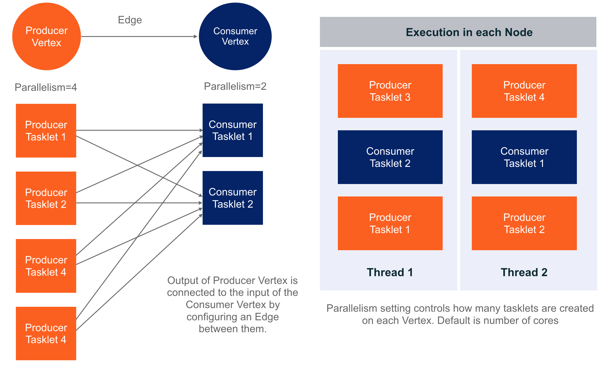
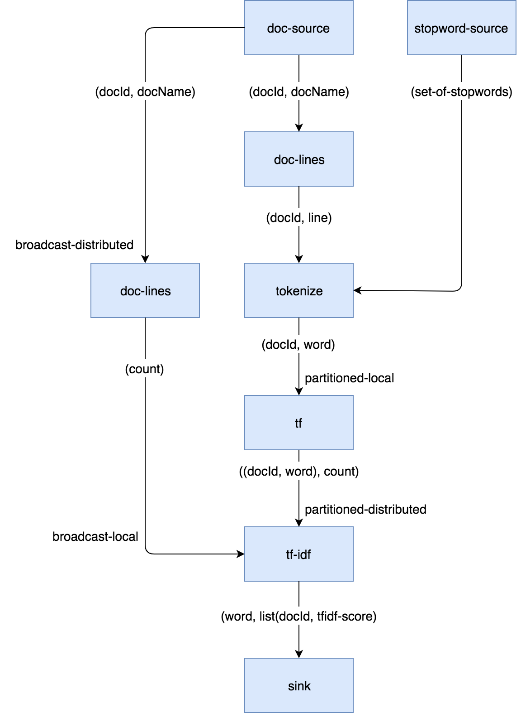

<!DOCTYPE html>
<html lang="en">
<head>
<meta charset="UTF-8">
<!--[if IE]><meta http-equiv="X-UA-Compatible" content="IE=edge"><![endif]-->
<meta name="viewport" content="width=device-width, initial-scale=1.0">
<meta name="generator" content="Asciidoctor 1.5.3">
<title>Expert Zone - The Core API</title>
<link rel="stylesheet" href="https://fonts.googleapis.com/css?family=Open+Sans:300,300italic,400,400italic,600,600italic%7CNoto+Serif:400,400italic,700,700italic%7CDroid+Sans+Mono:400,700">
<style>
/* Asciidoctor default stylesheet | MIT License | http://asciidoctor.org */
/* Remove comment around @import statement below when using as a custom stylesheet */
/*@import "https://fonts.googleapis.com/css?family=Open+Sans:300,300italic,400,400italic,600,600italic%7CNoto+Serif:400,400italic,700,700italic%7CDroid+Sans+Mono:400,700";*/
article,aside,details,figcaption,figure,footer,header,hgroup,main,nav,section,summary{display:block}
audio,canvas,video{display:inline-block}
audio:not([controls]){display:none;height:0}
[hidden],template{display:none}
script{display:none!important}
html{font-family:sans-serif;-ms-text-size-adjust:100%;-webkit-text-size-adjust:100%}
body{margin:0}
a{background:transparent}
a:focus{outline:thin dotted}
a:active,a:hover{outline:0}
h1{font-size:2em;margin:.67em 0}
abbr[title]{border-bottom:1px dotted}
b,strong{font-weight:bold}
dfn{font-style:italic}
hr{-moz-box-sizing:content-box;box-sizing:content-box;height:0}
mark{background:#ff0;color:#000}
code,kbd,pre,samp{font-family:monospace;font-size:1em}
pre{white-space:pre-wrap}
q{quotes:"\201C" "\201D" "\2018" "\2019"}
small{font-size:80%}
sub,sup{font-size:75%;line-height:0;position:relative;vertical-align:baseline}
sup{top:-.5em}
sub{bottom:-.25em}
img{border:0}
svg:not(:root){overflow:hidden}
figure{margin:0}
fieldset{border:1px solid silver;margin:0 2px;padding:.35em .625em .75em}
legend{border:0;padding:0}
button,input,select,textarea{font-family:inherit;font-size:100%;margin:0}
button,input{line-height:normal}
button,select{text-transform:none}
button,html input[type="button"],input[type="reset"],input[type="submit"]{-webkit-appearance:button;cursor:pointer}
button[disabled],html input[disabled]{cursor:default}
input[type="checkbox"],input[type="radio"]{box-sizing:border-box;padding:0}
input[type="search"]{-webkit-appearance:textfield;-moz-box-sizing:content-box;-webkit-box-sizing:content-box;box-sizing:content-box}
input[type="search"]::-webkit-search-cancel-button,input[type="search"]::-webkit-search-decoration{-webkit-appearance:none}
button::-moz-focus-inner,input::-moz-focus-inner{border:0;padding:0}
textarea{overflow:auto;vertical-align:top}
table{border-collapse:collapse;border-spacing:0}
*,*:before,*:after{-moz-box-sizing:border-box;-webkit-box-sizing:border-box;box-sizing:border-box}
html,body{font-size:100%}
body{background:#fff;color:rgba(0,0,0,.8);padding:0;margin:0;font-family:"Noto Serif","DejaVu Serif",serif;font-weight:400;font-style:normal;line-height:1;position:relative;cursor:auto}
a:hover{cursor:pointer}
img,object,embed{max-width:100%;height:auto}
object,embed{height:100%}
img{-ms-interpolation-mode:bicubic}
.left{float:left!important}
.right{float:right!important}
.text-left{text-align:left!important}
.text-right{text-align:right!important}
.text-center{text-align:center!important}
.text-justify{text-align:justify!important}
.hide{display:none}
body{-webkit-font-smoothing:antialiased}
img,object,svg{display:inline-block;vertical-align:middle}
textarea{height:auto;min-height:50px}
select{width:100%}
.center{margin-left:auto;margin-right:auto}
.spread{width:100%}
p.lead,.paragraph.lead>p,#preamble>.sectionbody>.paragraph:first-of-type p{font-size:1.21875em;line-height:1.6}
.subheader,.admonitionblock td.content>.title,.audioblock>.title,.exampleblock>.title,.imageblock>.title,.listingblock>.title,.literalblock>.title,.stemblock>.title,.openblock>.title,.paragraph>.title,.quoteblock>.title,table.tableblock>.title,.verseblock>.title,.videoblock>.title,.dlist>.title,.olist>.title,.ulist>.title,.qlist>.title,.hdlist>.title{line-height:1.45;color:#7a2518;font-weight:400;margin-top:0;margin-bottom:.25em}
div,dl,dt,dd,ul,ol,li,h1,h2,h3,#toctitle,.sidebarblock>.content>.title,h4,h5,h6,pre,form,p,blockquote,th,td{margin:0;padding:0;direction:ltr}
a{color:#2156a5;text-decoration:underline;line-height:inherit}
a:hover,a:focus{color:#1d4b8f}
a img{border:none}
p{font-family:inherit;font-weight:400;font-size:1em;line-height:1.6;margin-bottom:1.25em;text-rendering:optimizeLegibility}
p aside{font-size:.875em;line-height:1.35;font-style:italic}
h1,h2,h3,#toctitle,.sidebarblock>.content>.title,h4,h5,h6{font-family:"Open Sans","DejaVu Sans",sans-serif;font-weight:300;font-style:normal;color:#ba3925;text-rendering:optimizeLegibility;margin-top:1em;margin-bottom:.5em;line-height:1.0125em}
h1 small,h2 small,h3 small,#toctitle small,.sidebarblock>.content>.title small,h4 small,h5 small,h6 small{font-size:60%;color:#e99b8f;line-height:0}
h1{font-size:2.125em}
h2{font-size:1.6875em}
h3,#toctitle,.sidebarblock>.content>.title{font-size:1.375em}
h4,h5{font-size:1.125em}
h6{font-size:1em}
hr{border:solid #ddddd8;border-width:1px 0 0;clear:both;margin:1.25em 0 1.1875em;height:0}
em,i{font-style:italic;line-height:inherit}
strong,b{font-weight:bold;line-height:inherit}
small{font-size:60%;line-height:inherit}
code{font-family:"Droid Sans Mono","DejaVu Sans Mono",monospace;font-weight:400;color:rgba(0,0,0,.9)}
ul,ol,dl{font-size:1em;line-height:1.6;margin-bottom:1.25em;list-style-position:outside;font-family:inherit}
ul,ol,ul.no-bullet,ol.no-bullet{margin-left:1.5em}
ul li ul,ul li ol{margin-left:1.25em;margin-bottom:0;font-size:1em}
ul.square li ul,ul.circle li ul,ul.disc li ul{list-style:inherit}
ul.square{list-style-type:square}
ul.circle{list-style-type:circle}
ul.disc{list-style-type:disc}
ul.no-bullet{list-style:none}
ol li ul,ol li ol{margin-left:1.25em;margin-bottom:0}
dl dt{margin-bottom:.3125em;font-weight:bold}
dl dd{margin-bottom:1.25em}
abbr,acronym{text-transform:uppercase;font-size:90%;color:rgba(0,0,0,.8);border-bottom:1px dotted #ddd;cursor:help}
abbr{text-transform:none}
blockquote{margin:0 0 1.25em;padding:.5625em 1.25em 0 1.1875em;border-left:1px solid #ddd}
blockquote cite{display:block;font-size:.9375em;color:rgba(0,0,0,.6)}
blockquote cite:before{content:"\2014 \0020"}
blockquote cite a,blockquote cite a:visited{color:rgba(0,0,0,.6)}
blockquote,blockquote p{line-height:1.6;color:rgba(0,0,0,.85)}
@media only screen and (min-width:768px){h1,h2,h3,#toctitle,.sidebarblock>.content>.title,h4,h5,h6{line-height:1.2}
h1{font-size:2.75em}
h2{font-size:2.3125em}
h3,#toctitle,.sidebarblock>.content>.title{font-size:1.6875em}
h4{font-size:1.4375em}}
table{background:#fff;margin-bottom:1.25em;border:solid 1px #dedede}
table thead,table tfoot{background:#f7f8f7;font-weight:bold}
table thead tr th,table thead tr td,table tfoot tr th,table tfoot tr td{padding:.5em .625em .625em;font-size:inherit;color:rgba(0,0,0,.8);text-align:left}
table tr th,table tr td{padding:.5625em .625em;font-size:inherit;color:rgba(0,0,0,.8)}
table tr.even,table tr.alt,table tr:nth-of-type(even){background:#f8f8f7}
table thead tr th,table tfoot tr th,table tbody tr td,table tr td,table tfoot tr td{display:table-cell;line-height:1.6}
body{tab-size:4}
h1,h2,h3,#toctitle,.sidebarblock>.content>.title,h4,h5,h6{line-height:1.2;word-spacing:-.05em}
h1 strong,h2 strong,h3 strong,#toctitle strong,.sidebarblock>.content>.title strong,h4 strong,h5 strong,h6 strong{font-weight:400}
.clearfix:before,.clearfix:after,.float-group:before,.float-group:after{content:" ";display:table}
.clearfix:after,.float-group:after{clear:both}
*:not(pre)>code{font-size:.9375em;font-style:normal!important;letter-spacing:0;padding:.1em .5ex;word-spacing:-.15em;background-color:#f7f7f8;-webkit-border-radius:4px;border-radius:4px;line-height:1.45;text-rendering:optimizeSpeed}
pre,pre>code{line-height:1.45;color:rgba(0,0,0,.9);font-family:"Droid Sans Mono","DejaVu Sans Mono",monospace;font-weight:400;text-rendering:optimizeSpeed}
.keyseq{color:rgba(51,51,51,.8)}
kbd{font-family:"Droid Sans Mono","DejaVu Sans Mono",monospace;display:inline-block;color:rgba(0,0,0,.8);font-size:.65em;line-height:1.45;background-color:#f7f7f7;border:1px solid #ccc;-webkit-border-radius:3px;border-radius:3px;-webkit-box-shadow:0 1px 0 rgba(0,0,0,.2),0 0 0 .1em white inset;box-shadow:0 1px 0 rgba(0,0,0,.2),0 0 0 .1em #fff inset;margin:0 .15em;padding:.2em .5em;vertical-align:middle;position:relative;top:-.1em;white-space:nowrap}
.keyseq kbd:first-child{margin-left:0}
.keyseq kbd:last-child{margin-right:0}
.menuseq,.menu{color:rgba(0,0,0,.8)}
b.button:before,b.button:after{position:relative;top:-1px;font-weight:400}
b.button:before{content:"[";padding:0 3px 0 2px}
b.button:after{content:"]";padding:0 2px 0 3px}
p a>code:hover{color:rgba(0,0,0,.9)}
#header,#content,#footnotes,#footer{width:100%;margin-left:auto;margin-right:auto;margin-top:0;margin-bottom:0;max-width:62.5em;*zoom:1;position:relative;padding-left:.9375em;padding-right:.9375em}
#header:before,#header:after,#content:before,#content:after,#footnotes:before,#footnotes:after,#footer:before,#footer:after{content:" ";display:table}
#header:after,#content:after,#footnotes:after,#footer:after{clear:both}
#content{margin-top:1.25em}
#content:before{content:none}
#header>h1:first-child{color:rgba(0,0,0,.85);margin-top:2.25rem;margin-bottom:0}
#header>h1:first-child+#toc{margin-top:8px;border-top:1px solid #ddddd8}
#header>h1:only-child,body.toc2 #header>h1:nth-last-child(2){border-bottom:1px solid #ddddd8;padding-bottom:8px}
#header .details{border-bottom:1px solid #ddddd8;line-height:1.45;padding-top:.25em;padding-bottom:.25em;padding-left:.25em;color:rgba(0,0,0,.6);display:-ms-flexbox;display:-webkit-flex;display:flex;-ms-flex-flow:row wrap;-webkit-flex-flow:row wrap;flex-flow:row wrap}
#header .details span:first-child{margin-left:-.125em}
#header .details span.email a{color:rgba(0,0,0,.85)}
#header .details br{display:none}
#header .details br+span:before{content:"\00a0\2013\00a0"}
#header .details br+span.author:before{content:"\00a0\22c5\00a0";color:rgba(0,0,0,.85)}
#header .details br+span#revremark:before{content:"\00a0|\00a0"}
#header #revnumber{text-transform:capitalize}
#header #revnumber:after{content:"\00a0"}
#content>h1:first-child:not([class]){color:rgba(0,0,0,.85);border-bottom:1px solid #ddddd8;padding-bottom:8px;margin-top:0;padding-top:1rem;margin-bottom:1.25rem}
#toc{border-bottom:1px solid #efefed;padding-bottom:.5em}
#toc>ul{margin-left:.125em}
#toc ul.sectlevel0>li>a{font-style:italic}
#toc ul.sectlevel0 ul.sectlevel1{margin:.5em 0}
#toc ul{font-family:"Open Sans","DejaVu Sans",sans-serif;list-style-type:none}
#toc li{line-height:1.3334;margin-top:.3334em}
#toc a{text-decoration:none}
#toc a:active{text-decoration:underline}
#toctitle{color:#7a2518;font-size:1.2em}
@media only screen and (min-width:768px){#toctitle{font-size:1.375em}
body.toc2{padding-left:15em;padding-right:0}
#toc.toc2{margin-top:0!important;background-color:#f8f8f7;position:fixed;width:15em;left:0;top:0;border-right:1px solid #efefed;border-top-width:0!important;border-bottom-width:0!important;z-index:1000;padding:1.25em 1em;height:100%;overflow:auto}
#toc.toc2 #toctitle{margin-top:0;margin-bottom:.8rem;font-size:1.2em}
#toc.toc2>ul{font-size:.9em;margin-bottom:0}
#toc.toc2 ul ul{margin-left:0;padding-left:1em}
#toc.toc2 ul.sectlevel0 ul.sectlevel1{padding-left:0;margin-top:.5em;margin-bottom:.5em}
body.toc2.toc-right{padding-left:0;padding-right:15em}
body.toc2.toc-right #toc.toc2{border-right-width:0;border-left:1px solid #efefed;left:auto;right:0}}
@media only screen and (min-width:1280px){body.toc2{padding-left:20em;padding-right:0}
#toc.toc2{width:20em}
#toc.toc2 #toctitle{font-size:1.375em}
#toc.toc2>ul{font-size:.95em}
#toc.toc2 ul ul{padding-left:1.25em}
body.toc2.toc-right{padding-left:0;padding-right:20em}}
#content #toc{border-style:solid;border-width:1px;border-color:#e0e0dc;margin-bottom:1.25em;padding:1.25em;background:#f8f8f7;-webkit-border-radius:4px;border-radius:4px}
#content #toc>:first-child{margin-top:0}
#content #toc>:last-child{margin-bottom:0}
#footer{max-width:100%;background-color:rgba(0,0,0,.8);padding:1.25em}
#footer-text{color:rgba(255,255,255,.8);line-height:1.44}
.sect1{padding-bottom:.625em}
@media only screen and (min-width:768px){.sect1{padding-bottom:1.25em}}
.sect1+.sect1{border-top:1px solid #efefed}
#content h1>a.anchor,h2>a.anchor,h3>a.anchor,#toctitle>a.anchor,.sidebarblock>.content>.title>a.anchor,h4>a.anchor,h5>a.anchor,h6>a.anchor{position:absolute;z-index:1001;width:1.5ex;margin-left:-1.5ex;display:block;text-decoration:none!important;visibility:hidden;text-align:center;font-weight:400}
#content h1>a.anchor:before,h2>a.anchor:before,h3>a.anchor:before,#toctitle>a.anchor:before,.sidebarblock>.content>.title>a.anchor:before,h4>a.anchor:before,h5>a.anchor:before,h6>a.anchor:before{content:"\00A7";font-size:.85em;display:block;padding-top:.1em}
#content h1:hover>a.anchor,#content h1>a.anchor:hover,h2:hover>a.anchor,h2>a.anchor:hover,h3:hover>a.anchor,#toctitle:hover>a.anchor,.sidebarblock>.content>.title:hover>a.anchor,h3>a.anchor:hover,#toctitle>a.anchor:hover,.sidebarblock>.content>.title>a.anchor:hover,h4:hover>a.anchor,h4>a.anchor:hover,h5:hover>a.anchor,h5>a.anchor:hover,h6:hover>a.anchor,h6>a.anchor:hover{visibility:visible}
#content h1>a.link,h2>a.link,h3>a.link,#toctitle>a.link,.sidebarblock>.content>.title>a.link,h4>a.link,h5>a.link,h6>a.link{color:#ba3925;text-decoration:none}
#content h1>a.link:hover,h2>a.link:hover,h3>a.link:hover,#toctitle>a.link:hover,.sidebarblock>.content>.title>a.link:hover,h4>a.link:hover,h5>a.link:hover,h6>a.link:hover{color:#a53221}
.audioblock,.imageblock,.literalblock,.listingblock,.stemblock,.videoblock{margin-bottom:1.25em}
.admonitionblock td.content>.title,.audioblock>.title,.exampleblock>.title,.imageblock>.title,.listingblock>.title,.literalblock>.title,.stemblock>.title,.openblock>.title,.paragraph>.title,.quoteblock>.title,table.tableblock>.title,.verseblock>.title,.videoblock>.title,.dlist>.title,.olist>.title,.ulist>.title,.qlist>.title,.hdlist>.title{text-rendering:optimizeLegibility;text-align:left;font-family:"Noto Serif","DejaVu Serif",serif;font-size:1rem;font-style:italic}
table.tableblock>caption.title{white-space:nowrap;overflow:visible;max-width:0}
.paragraph.lead>p,#preamble>.sectionbody>.paragraph:first-of-type p{color:rgba(0,0,0,.85)}
table.tableblock #preamble>.sectionbody>.paragraph:first-of-type p{font-size:inherit}
.admonitionblock>table{border-collapse:separate;border:0;background:none;width:100%}
.admonitionblock>table td.icon{text-align:center;width:80px}
.admonitionblock>table td.icon img{max-width:none}
.admonitionblock>table td.icon .title{font-weight:bold;font-family:"Open Sans","DejaVu Sans",sans-serif;text-transform:uppercase}
.admonitionblock>table td.content{padding-left:1.125em;padding-right:1.25em;border-left:1px solid #ddddd8;color:rgba(0,0,0,.6)}
.admonitionblock>table td.content>:last-child>:last-child{margin-bottom:0}
.exampleblock>.content{border-style:solid;border-width:1px;border-color:#e6e6e6;margin-bottom:1.25em;padding:1.25em;background:#fff;-webkit-border-radius:4px;border-radius:4px}
.exampleblock>.content>:first-child{margin-top:0}
.exampleblock>.content>:last-child{margin-bottom:0}
.sidebarblock{border-style:solid;border-width:1px;border-color:#e0e0dc;margin-bottom:1.25em;padding:1.25em;background:#f8f8f7;-webkit-border-radius:4px;border-radius:4px}
.sidebarblock>:first-child{margin-top:0}
.sidebarblock>:last-child{margin-bottom:0}
.sidebarblock>.content>.title{color:#7a2518;margin-top:0;text-align:center}
.exampleblock>.content>:last-child>:last-child,.exampleblock>.content .olist>ol>li:last-child>:last-child,.exampleblock>.content .ulist>ul>li:last-child>:last-child,.exampleblock>.content .qlist>ol>li:last-child>:last-child,.sidebarblock>.content>:last-child>:last-child,.sidebarblock>.content .olist>ol>li:last-child>:last-child,.sidebarblock>.content .ulist>ul>li:last-child>:last-child,.sidebarblock>.content .qlist>ol>li:last-child>:last-child{margin-bottom:0}
.literalblock pre,.listingblock pre:not(.highlight),.listingblock pre[class="highlight"],.listingblock pre[class^="highlight "],.listingblock pre.CodeRay,.listingblock pre.prettyprint{background:#f7f7f8}
.sidebarblock .literalblock pre,.sidebarblock .listingblock pre:not(.highlight),.sidebarblock .listingblock pre[class="highlight"],.sidebarblock .listingblock pre[class^="highlight "],.sidebarblock .listingblock pre.CodeRay,.sidebarblock .listingblock pre.prettyprint{background:#f2f1f1}
.literalblock pre,.literalblock pre[class],.listingblock pre,.listingblock pre[class]{-webkit-border-radius:4px;border-radius:4px;word-wrap:break-word;padding:1em;font-size:.8125em}
.literalblock pre.nowrap,.literalblock pre[class].nowrap,.listingblock pre.nowrap,.listingblock pre[class].nowrap{overflow-x:auto;white-space:pre;word-wrap:normal}
@media only screen and (min-width:768px){.literalblock pre,.literalblock pre[class],.listingblock pre,.listingblock pre[class]{font-size:.90625em}}
@media only screen and (min-width:1280px){.literalblock pre,.literalblock pre[class],.listingblock pre,.listingblock pre[class]{font-size:1em}}
.literalblock.output pre{color:#f7f7f8;background-color:rgba(0,0,0,.9)}
.listingblock pre.highlightjs{padding:0}
.listingblock pre.highlightjs>code{padding:1em;-webkit-border-radius:4px;border-radius:4px}
.listingblock pre.prettyprint{border-width:0}
.listingblock>.content{position:relative}
.listingblock code[data-lang]:before{display:none;content:attr(data-lang);position:absolute;font-size:.75em;top:.425rem;right:.5rem;line-height:1;text-transform:uppercase;color:#999}
.listingblock:hover code[data-lang]:before{display:block}
.listingblock.terminal pre .command:before{content:attr(data-prompt);padding-right:.5em;color:#999}
.listingblock.terminal pre .command:not([data-prompt]):before{content:"$"}
table.pyhltable{border-collapse:separate;border:0;margin-bottom:0;background:none}
table.pyhltable td{vertical-align:top;padding-top:0;padding-bottom:0;line-height:1.45}
table.pyhltable td.code{padding-left:.75em;padding-right:0}
pre.pygments .lineno,table.pyhltable td:not(.code){color:#999;padding-left:0;padding-right:.5em;border-right:1px solid #ddddd8}
pre.pygments .lineno{display:inline-block;margin-right:.25em}
table.pyhltable .linenodiv{background:none!important;padding-right:0!important}
.quoteblock{margin:0 1em 1.25em 1.5em;display:table}
.quoteblock>.title{margin-left:-1.5em;margin-bottom:.75em}
.quoteblock blockquote,.quoteblock blockquote p{color:rgba(0,0,0,.85);font-size:1.15rem;line-height:1.75;word-spacing:.1em;letter-spacing:0;font-style:italic;text-align:justify}
.quoteblock blockquote{margin:0;padding:0;border:0}
.quoteblock blockquote:before{content:"\201c";float:left;font-size:2.75em;font-weight:bold;line-height:.6em;margin-left:-.6em;color:#7a2518;text-shadow:0 1px 2px rgba(0,0,0,.1)}
.quoteblock blockquote>.paragraph:last-child p{margin-bottom:0}
.quoteblock .attribution{margin-top:.5em;margin-right:.5ex;text-align:right}
.quoteblock .quoteblock{margin-left:0;margin-right:0;padding:.5em 0;border-left:3px solid rgba(0,0,0,.6)}
.quoteblock .quoteblock blockquote{padding:0 0 0 .75em}
.quoteblock .quoteblock blockquote:before{display:none}
.verseblock{margin:0 1em 1.25em 1em}
.verseblock pre{font-family:"Open Sans","DejaVu Sans",sans;font-size:1.15rem;color:rgba(0,0,0,.85);font-weight:300;text-rendering:optimizeLegibility}
.verseblock pre strong{font-weight:400}
.verseblock .attribution{margin-top:1.25rem;margin-left:.5ex}
.quoteblock .attribution,.verseblock .attribution{font-size:.9375em;line-height:1.45;font-style:italic}
.quoteblock .attribution br,.verseblock .attribution br{display:none}
.quoteblock .attribution cite,.verseblock .attribution cite{display:block;letter-spacing:-.025em;color:rgba(0,0,0,.6)}
.quoteblock.abstract{margin:0 0 1.25em 0;display:block}
.quoteblock.abstract blockquote,.quoteblock.abstract blockquote p{text-align:left;word-spacing:0}
.quoteblock.abstract blockquote:before,.quoteblock.abstract blockquote p:first-of-type:before{display:none}
table.tableblock{max-width:100%;border-collapse:separate}
table.tableblock td>.paragraph:last-child p>p:last-child,table.tableblock th>p:last-child,table.tableblock td>p:last-child{margin-bottom:0}
table.tableblock,th.tableblock,td.tableblock{border:0 solid #dedede}
table.grid-all th.tableblock,table.grid-all td.tableblock{border-width:0 1px 1px 0}
table.grid-all tfoot>tr>th.tableblock,table.grid-all tfoot>tr>td.tableblock{border-width:1px 1px 0 0}
table.grid-cols th.tableblock,table.grid-cols td.tableblock{border-width:0 1px 0 0}
table.grid-all *>tr>.tableblock:last-child,table.grid-cols *>tr>.tableblock:last-child{border-right-width:0}
table.grid-rows th.tableblock,table.grid-rows td.tableblock{border-width:0 0 1px 0}
table.grid-all tbody>tr:last-child>th.tableblock,table.grid-all tbody>tr:last-child>td.tableblock,table.grid-all thead:last-child>tr>th.tableblock,table.grid-rows tbody>tr:last-child>th.tableblock,table.grid-rows tbody>tr:last-child>td.tableblock,table.grid-rows thead:last-child>tr>th.tableblock{border-bottom-width:0}
table.grid-rows tfoot>tr>th.tableblock,table.grid-rows tfoot>tr>td.tableblock{border-width:1px 0 0 0}
table.frame-all{border-width:1px}
table.frame-sides{border-width:0 1px}
table.frame-topbot{border-width:1px 0}
th.halign-left,td.halign-left{text-align:left}
th.halign-right,td.halign-right{text-align:right}
th.halign-center,td.halign-center{text-align:center}
th.valign-top,td.valign-top{vertical-align:top}
th.valign-bottom,td.valign-bottom{vertical-align:bottom}
th.valign-middle,td.valign-middle{vertical-align:middle}
table thead th,table tfoot th{font-weight:bold}
tbody tr th{display:table-cell;line-height:1.6;background:#f7f8f7}
tbody tr th,tbody tr th p,tfoot tr th,tfoot tr th p{color:rgba(0,0,0,.8);font-weight:bold}
p.tableblock>code:only-child{background:none;padding:0}
p.tableblock{font-size:1em}
td>div.verse{white-space:pre}
ol{margin-left:1.75em}
ul li ol{margin-left:1.5em}
dl dd{margin-left:1.125em}
dl dd:last-child,dl dd:last-child>:last-child{margin-bottom:0}
ol>li p,ul>li p,ul dd,ol dd,.olist .olist,.ulist .ulist,.ulist .olist,.olist .ulist{margin-bottom:.625em}
ul.unstyled,ol.unnumbered,ul.checklist,ul.none{list-style-type:none}
ul.unstyled,ol.unnumbered,ul.checklist{margin-left:.625em}
ul.checklist li>p:first-child>.fa-square-o:first-child,ul.checklist li>p:first-child>.fa-check-square-o:first-child{width:1em;font-size:.85em}
ul.checklist li>p:first-child>input[type="checkbox"]:first-child{width:1em;position:relative;top:1px}
ul.inline{margin:0 auto .625em auto;margin-left:-1.375em;margin-right:0;padding:0;list-style:none;overflow:hidden}
ul.inline>li{list-style:none;float:left;margin-left:1.375em;display:block}
ul.inline>li>*{display:block}
.unstyled dl dt{font-weight:400;font-style:normal}
ol.arabic{list-style-type:decimal}
ol.decimal{list-style-type:decimal-leading-zero}
ol.loweralpha{list-style-type:lower-alpha}
ol.upperalpha{list-style-type:upper-alpha}
ol.lowerroman{list-style-type:lower-roman}
ol.upperroman{list-style-type:upper-roman}
ol.lowergreek{list-style-type:lower-greek}
.hdlist>table,.colist>table{border:0;background:none}
.hdlist>table>tbody>tr,.colist>table>tbody>tr{background:none}
td.hdlist1,td.hdlist2{vertical-align:top;padding:0 .625em}
td.hdlist1{font-weight:bold;padding-bottom:1.25em}
.literalblock+.colist,.listingblock+.colist{margin-top:-.5em}
.colist>table tr>td:first-of-type{padding:0 .75em;line-height:1}
.colist>table tr>td:last-of-type{padding:.25em 0}
.thumb,.th{line-height:0;display:inline-block;border:solid 4px #fff;-webkit-box-shadow:0 0 0 1px #ddd;box-shadow:0 0 0 1px #ddd}
.imageblock.left,.imageblock[style*="float: left"]{margin:.25em .625em 1.25em 0}
.imageblock.right,.imageblock[style*="float: right"]{margin:.25em 0 1.25em .625em}
.imageblock>.title{margin-bottom:0}
.imageblock.thumb,.imageblock.th{border-width:6px}
.imageblock.thumb>.title,.imageblock.th>.title{padding:0 .125em}
.image.left,.image.right{margin-top:.25em;margin-bottom:.25em;display:inline-block;line-height:0}
.image.left{margin-right:.625em}
.image.right{margin-left:.625em}
a.image{text-decoration:none;display:inline-block}
a.image object{pointer-events:none}
sup.footnote,sup.footnoteref{font-size:.875em;position:static;vertical-align:super}
sup.footnote a,sup.footnoteref a{text-decoration:none}
sup.footnote a:active,sup.footnoteref a:active{text-decoration:underline}
#footnotes{padding-top:.75em;padding-bottom:.75em;margin-bottom:.625em}
#footnotes hr{width:20%;min-width:6.25em;margin:-.25em 0 .75em 0;border-width:1px 0 0 0}
#footnotes .footnote{padding:0 .375em 0 .225em;line-height:1.3334;font-size:.875em;margin-left:1.2em;text-indent:-1.05em;margin-bottom:.2em}
#footnotes .footnote a:first-of-type{font-weight:bold;text-decoration:none}
#footnotes .footnote:last-of-type{margin-bottom:0}
#content #footnotes{margin-top:-.625em;margin-bottom:0;padding:.75em 0}
.gist .file-data>table{border:0;background:#fff;width:100%;margin-bottom:0}
.gist .file-data>table td.line-data{width:99%}
div.unbreakable{page-break-inside:avoid}
.big{font-size:larger}
.small{font-size:smaller}
.underline{text-decoration:underline}
.overline{text-decoration:overline}
.line-through{text-decoration:line-through}
.aqua{color:#00bfbf}
.aqua-background{background-color:#00fafa}
.black{color:#000}
.black-background{background-color:#000}
.blue{color:#0000bf}
.blue-background{background-color:#0000fa}
.fuchsia{color:#bf00bf}
.fuchsia-background{background-color:#fa00fa}
.gray{color:#606060}
.gray-background{background-color:#7d7d7d}
.green{color:#006000}
.green-background{background-color:#007d00}
.lime{color:#00bf00}
.lime-background{background-color:#00fa00}
.maroon{color:#600000}
.maroon-background{background-color:#7d0000}
.navy{color:#000060}
.navy-background{background-color:#00007d}
.olive{color:#606000}
.olive-background{background-color:#7d7d00}
.purple{color:#600060}
.purple-background{background-color:#7d007d}
.red{color:#bf0000}
.red-background{background-color:#fa0000}
.silver{color:#909090}
.silver-background{background-color:#bcbcbc}
.teal{color:#006060}
.teal-background{background-color:#007d7d}
.white{color:#bfbfbf}
.white-background{background-color:#fafafa}
.yellow{color:#bfbf00}
.yellow-background{background-color:#fafa00}
span.icon>.fa{cursor:default}
.admonitionblock td.icon [class^="fa icon-"]{font-size:2.5em;text-shadow:1px 1px 2px rgba(0,0,0,.5);cursor:default}
.admonitionblock td.icon .icon-note:before{content:"\f05a";color:#19407c}
.admonitionblock td.icon .icon-tip:before{content:"\f0eb";text-shadow:1px 1px 2px rgba(155,155,0,.8);color:#111}
.admonitionblock td.icon .icon-warning:before{content:"\f071";color:#bf6900}
.admonitionblock td.icon .icon-caution:before{content:"\f06d";color:#bf3400}
.admonitionblock td.icon .icon-important:before{content:"\f06a";color:#bf0000}
.conum[data-value]{display:inline-block;color:#fff!important;background-color:rgba(0,0,0,.8);-webkit-border-radius:100px;border-radius:100px;text-align:center;font-size:.75em;width:1.67em;height:1.67em;line-height:1.67em;font-family:"Open Sans","DejaVu Sans",sans-serif;font-style:normal;font-weight:bold}
.conum[data-value] *{color:#fff!important}
.conum[data-value]+b{display:none}
.conum[data-value]:after{content:attr(data-value)}
pre .conum[data-value]{position:relative;top:-.125em}
b.conum *{color:inherit!important}
.conum:not([data-value]):empty{display:none}
dt,th.tableblock,td.content,div.footnote{text-rendering:optimizeLegibility}
h1,h2,p,td.content,span.alt{letter-spacing:-.01em}
p strong,td.content strong,div.footnote strong{letter-spacing:-.005em}
p,blockquote,dt,td.content,span.alt{font-size:1.0625rem}
p{margin-bottom:1.25rem}
.sidebarblock p,.sidebarblock dt,.sidebarblock td.content,p.tableblock{font-size:1em}
.exampleblock>.content{background-color:#fffef7;border-color:#e0e0dc;-webkit-box-shadow:0 1px 4px #e0e0dc;box-shadow:0 1px 4px #e0e0dc}
.print-only{display:none!important}
@media print{@page{margin:1.25cm .75cm}
*{-webkit-box-shadow:none!important;box-shadow:none!important;text-shadow:none!important}
a{color:inherit!important;text-decoration:underline!important}
a.bare,a[href^="#"],a[href^="mailto:"]{text-decoration:none!important}
a[href^="http:"]:not(.bare):after,a[href^="https:"]:not(.bare):after{content:"(" attr(href) ")";display:inline-block;font-size:.875em;padding-left:.25em}
abbr[title]:after{content:" (" attr(title) ")"}
pre,blockquote,tr,img,object,svg{page-break-inside:avoid}
thead{display:table-header-group}
svg{max-width:100%}
p,blockquote,dt,td.content{font-size:1em;orphans:3;widows:3}
h2,h3,#toctitle,.sidebarblock>.content>.title{page-break-after:avoid}
#toc,.sidebarblock,.exampleblock>.content{background:none!important}
#toc{border-bottom:1px solid #ddddd8!important;padding-bottom:0!important}
.sect1{padding-bottom:0!important}
.sect1+.sect1{border:0!important}
#header>h1:first-child{margin-top:1.25rem}
body.book #header{text-align:center}
body.book #header>h1:first-child{border:0!important;margin:2.5em 0 1em 0}
body.book #header .details{border:0!important;display:block;padding:0!important}
body.book #header .details span:first-child{margin-left:0!important}
body.book #header .details br{display:block}
body.book #header .details br+span:before{content:none!important}
body.book #toc{border:0!important;text-align:left!important;padding:0!important;margin:0!important}
body.book #toc,body.book #preamble,body.book h1.sect0,body.book .sect1>h2{page-break-before:always}
.listingblock code[data-lang]:before{display:block}
#footer{background:none!important;padding:0 .9375em}
#footer-text{color:rgba(0,0,0,.6)!important;font-size:.9em}
.hide-on-print{display:none!important}
.print-only{display:block!important}
.hide-for-print{display:none!important}
.show-for-print{display:inherit!important}}
</style>
</head>
<body class="book">
<div id="content">
<div class="sect1">
<h2 id="expert-zone-the-core-api">8. Expert Zone - The Core API</h2>
<div class="sectionbody">
<div class="paragraph">
<p>This section covers the Core API, Jet&#8217;s low-level API that directly
exposes the computation engine&#8217;s raw features. If you are looking for
the API to build your computation pipeline, please refer to the
<a href="#work-with-jet">Work With Jet</a> section.</p>
</div>
<div class="paragraph">
<p>Creating a Core API DAG requires expert-level familiarity with concepts
like partitioning schemes, vertex parallelism, distributed vs. local
edges, etc. Furthermore, this API offers no static type safety and it
is very easy to create a DAG that fails with a <code>ClassCastException</code> when
executed. Even though it is possible, this API is not intended to
create DAGs by hand; its purpose is to serve as the infrastructure on
top of which to build high-level DSLs and APIs that describe computation
jobs.</p>
</div>
<div class="paragraph">
<p>Implementing a Core API <code>Processor</code> requires even greater expertise than
building a DAG. Among other things, you have to be acquainted in detail
with Jet&#8217;s concept of cooperative multithreading. While we provide as
much convenience as we can for extending Jet with your custom
processors, we cannot remove the dangers of using these facilities
improperly.</p>
</div>
<div class="sect2">
<h3 id="jet-execution-model">8.1. Jet Execution Model</h3>
<div class="paragraph">
<p>At the heart of Jet is the
<a href="https://github.com/hazelcast/hazelcast-jet/blob/master/hazelcast-jet-core/src/main/java/com/hazelcast/jet/impl/execution/TaskletExecutionService.java"><code>TaskletExecutionService</code></a>.
It manages the threads that perform all the computation in a Jet job.
Although this class is not formally a part of Jet&#8217;s public API,
understanding how it schedules code for execution is essential if you
want to implement a cooperative processor.</p>
</div>
<div class="sect3">
<h4 id="cooperative-multithreading">8.1.1. Cooperative Multithreading</h4>
<div class="paragraph">
<p>Cooperative multithreading is one of the core features of Jet and can be
roughly compared to
<a href="https://en.wikipedia.org/wiki/Green_threads">green threads</a>.
It is purely a library-level feature and does not involve any low-level
system or JVM tricks; the <code>Processor</code> API is simply designed in such a
way that the processor can do a small amount of work each time it is
invoked, then yield back to the Jet engine. The engine manages a thread
pool of fixed size and on each thread, the processors take their turn in
a round-robin fashion.</p>
</div>
<div class="paragraph">
<p>The point of cooperative multithreading is better performance. Several
factors contribute to this:</p>
</div>
<div class="ulist">
<ul>
<li>
<p>The overhead of context switching between processors is much lower
since the operating system&#8217;s thread scheduler is not involved.</p>
</li>
<li>
<p>The worker thread driving the processors stays on the same core for
longer periods, preserving the CPU cache lines.</p>
</li>
<li>
<p>The worker thread has direct knowledge of the ability of a processor
to make progress (by inspecting its input/output buffers).</p>
</li>
</ul>
</div>
</div>
<div class="sect3">
<h4 id="tasklet">8.1.2. Tasklet</h4>
<div class="paragraph">
<p>The execution service doesn&#8217;t deal with processors directly; instead it
deals with <em>tasklets</em>.
<a href="https://github.com/hazelcast/hazelcast-jet/blob/master/hazelcast-jet-core/src/main/java/com/hazelcast/jet/impl/execution/Tasklet.java"><code>Tasklet</code></a>
is a very simple functional interface derived from the standard Java
<code>Callable&lt;ProgressState&gt;</code>. The execution service manages a pool of
worker threads, each being responsible for a list of tasklets. The
worker thread simply invokes the <code>call()</code> methods on its tasklets in a
round-robin fashion. The method&#8217;s return value tells whether the tasklet
made progress and whether it is now done.</p>
</div>
<div class="paragraph">
<p>The most important tasklet is the one driving a processor
(<code>ProcessorTasklet</code>); there are a few others that deal with network
sending/receiving and taking snapshots.</p>
</div>
</div>
<div class="sect3">
<h4 id="work-stealing">8.1.3. Work Stealing</h4>
<div class="paragraph">
<p>When a tasklet is done, its worker will inspect all the other workers'
tasklet lists to see if any of them has a longer tasklet list than its
own. If it finds such a worker, it will "steal" one of its tasklets to
even out the load per thread.</p>
</div>
</div>
<div class="sect3">
<h4 id="exponential-backoff">8.1.4. Exponential Backoff</h4>
<div class="paragraph">
<p>If none of the worker&#8217;s tasklets report having made progress, the worker
will go to a short sleep. If this happens again after it wakes up, it
will sleep for twice as long. Once it reaches 1 ms sleep time, it will
continue retrying once per millisecond to see if any tasklets can make
progress.</p>
</div>
</div>
<div class="sect3">
<h4 id="processor-tasklet">8.1.5. ProcessorTasklet</h4>
<div class="paragraph">
<p><a href="https://github.com/hazelcast/hazelcast-jet/blob/master/hazelcast-jet-core/src/main/java/com/hazelcast/jet/impl/execution/ProcessorTasklet.java"><code>ProcessorTasklet</code></a>
is the one that drives a processor. It manages its inbox, outbox,
inbound/outbound concurrent queues, and tracks the current processor
state so it knows which of its callback methods to call.</p>
</div>
<div class="paragraph">
<p>During each <code>tasklet.call()</code>, <code>ProcessorTasklet</code> makes one call into
one of its processor&#8217;s callbacks. It determines the processor&#8217;s progress
status and reports it to the execution service.</p>
</div>
</div>
<div class="sect3">
<h4 id="non-cooperative-processor">8.1.6. Non-Cooperative Processor</h4>
<div class="paragraph">
<p>If a processor declares itself as non-cooperative, the execution service
will start a dedicated Java thread for its tasklet to run on.</p>
</div>
<div class="paragraph">
<p>Even if it&#8217;s non-cooperative, the processor&#8217;s callback methods must
still make sure they don&#8217;t run for longer than a second or so at a time.
Otherwise the tasklet will never be able to initiate a snapshot on the
processor.</p>
</div>
</div>
<div class="sect3">
<h4 id="running-a-jet-job">8.1.7. Running a Jet job</h4>
<div class="paragraph">
<p>When you submit a <code>Job</code> to it, Jet replicates the DAG to the whole Jet
cluster and executes a copy of it on each member.</p>
</div>
<div class="imageblock">
<div class="content">

</div>
</div>
<div class="paragraph">
<p>Jet executes the job on a user-configurable number of threads which use
work stealing to balance the amount of work being done on each thread.
Each worker thread has a list of tasklets it is in charge of and as
tasklets complete at different rates, the remaining ones are moved
between workers to keep the load balanced.</p>
</div>
<div class="paragraph">
<p>Each instance of a <code>Processor</code> is wrapped in one tasklet which the
execution service repeatedly executes until it is done. A vertex with a
parallelism of 8 running on 4 members would have a total of 32 tasklets
running at the same time. Each member has the same number of tasklets
running.</p>
</div>
<div class="imageblock">
<div class="content">

</div>
</div>
<div class="paragraph">
<p>When you make a request to execute a Job, the corresponding DAG and
additional resources are deployed to the Jet cluster. Jet builds an
execution plan for the DAG on each member, which creates the associated
tasklets for each Vertex and connects them to their inputs and outputs.</p>
</div>
<div class="paragraph">
<p>Jet uses Single Producer/Single Consumer ringbuffers to transfer the
data between processors on the same member. They are data-type agnostic,
so any data type can be used to transfer the data between vertices.</p>
</div>
<div class="paragraph">
<p>Ringbuffers, being bounded queues, introduce natural backpressure into
the system; if a consumer’s ringbuffer is full, the producer will have
to back off until it can enqueue the next item. When data is sent to
another member over the network, there is no natural backpressure, so
Jet uses explicit signaling in the form of adaptive receive windows.</p>
</div>
</div>
</div>
<div class="sect2">
<h3 id="dag">8.2. DAG</h3>
<div class="paragraph">
<p>The DAG-building API is centered around the
<a href="http://docs.hazelcast.org/docs/jet/latest-dev/javadoc/com/hazelcast/jet/core/DAG.html"><code>DAG</code></a>
class. This is a pure data class and can be instantiated on its own,
without a Jet instance. This makes it simple to separate the
job-describing code from the code that manages the lifecycle of Jet
instances. To start building a DAG, you just write</p>
</div>
<div class="listingblock">
<div class="content">
<pre class="highlight"><code class="language-java" data-lang="java">DAG dag = new DAG();</code></pre>
</div>
</div>
<div class="paragraph">
<p>A good practice is to structure the DAG-building code into the following
sections:</p>
</div>
<div class="olist arabic">
<ol class="arabic">
<li>
<p>Create all the vertices.</p>
</li>
<li>
<p>Configure the local parallelism of vertices.</p>
</li>
<li>
<p>Create the edges.</p>
</li>
</ol>
</div>
<div class="paragraph">
<p>Example:</p>
</div>
<div class="listingblock">
<div class="content">
<pre class="highlight"><code class="language-java" data-lang="java">DAG dag = new DAG();

// 1. Create vertices
Vertex source = dag.newVertex("source", Sources.readFiles("."));
Vertex transform = dag.newVertex("transform", Processors.map(
        (String line) -&gt; entry(line, line.length())));
Vertex sink = dag.newVertex("sink", Sinks.writeMap("sinkMap"));

// 2. Configure local parallelism
source.localParallelism(1);

// 3. Create edges
dag.edge(between(source, transform));
dag.edge(between(transform, sink));</code></pre>
</div>
</div>
<div class="sect3">
<h4 id="creating-a-vertex">8.2.1. Creating a Vertex</h4>
<div class="paragraph">
<p>The two mandatory elements of creating a vertex are its string
identifier and the supplier of processors. The latter can be provided in
three variants, differing in the degree of explicit control over the
lifecycle management of the processors. From simple to complex they are:</p>
</div>
<div class="olist arabic">
<ol class="arabic">
<li>
<p><a href="http://docs.hazelcast.org/docs/jet/latest-dev/javadoc/com/hazelcast/jet/function/DistributedSupplier.html"><code>DistributedSupplier&lt;Processor&gt;</code></a>
directly returns processor instances from its <code>get()</code> method. It is
expected to be stateless and return equivalent instances on each
call. It doesn&#8217;t provide any initialization or cleanup code.</p>
</li>
<li>
<p><a href="http://docs.hazelcast.org/docs/jet/latest-dev/javadoc/com/hazelcast/jet/core/ProcessorSupplier.html"><code>ProcessorSupplier</code></a>
returns in a single call all the processors that will run on a single
cluster member. It may specialize each instance, for example to
achieve local data partitioning. It is also in charge of the
member-local lifecycle (initialization and destruction).</p>
</li>
<li>
<p><strong><a href="http://docs.hazelcast.org/docs/jet/latest-dev/javadoc/com/hazelcast/jet/core/ProcessorMetaSupplier.html"><code>ProcessorSupplier</code></a></strong>
returns in a single call an object that will be in charge of creating
all the processors for a vertex. Given a list of member addresses,
the object it returns is a <code>Function&lt;Address, ProcessorSupplier&gt;</code>
which will then be called with each of the addresses from the list to
retrieve the <code>ProcessorSupplier</code> specialized for the given member.</p>
</li>
</ol>
</div>
<div class="paragraph">
<p>Usually you don&#8217;t have to care, or even know, which of these variants is
used. You&#8217;ll call a library-provided factory method that returns one or
the other and they will integrate the same way into your <code>newVertex()</code>
calls.</p>
</div>
</div>
<div class="sect3">
<h4 id="local-and-global-parallelism-of-vertex">8.2.2. Local and Global Parallelism of Vertex</h4>
<div class="paragraph">
<p>The vertex is implemented by one or more instances of <code>Processor</code> on
each member. Each vertex can specify how many of its processors will run
per cluster member using the <code>localParallelism</code> property; every member
will have the same number of processors. A new <code>Vertex</code> instance has
this property set to <code>-1</code>, which requests to use the default value equal
to the configured size of the cooperative thread pool. The latter
defaults to <code>Runtime.availableProcessors()</code> and is configurable via
<a href="http://docs.hazelcast.org/docs/jet/latest-dev/javadoc/com/hazelcast/jet/config/InstanceConfig.html#setCooperativeThreadCount-int-"><code>InstanceConfig.setCooperativeThreadCount()</code></a>.</p>
</div>
<div class="paragraph">
<p>In most cases the only value of local parallelism that you&#8217;ll want to
explicitly configure is <code>1</code> for the cases where no parallelism is
desirable (e.g. on a source processor reading from a file).</p>
</div>
<div class="paragraph">
<p>The <strong>global parallelism</strong> of the vertex is also an important value,
especially in terms of the distribution of partitions among processors.
It is equal to local parallelism multiplied by the cluster size.</p>
</div>
</div>
<div class="sect3">
<h4 id="edge-original">8.2.3. Edge Ordinal</h4>
<div class="paragraph">
<p>An edge is connected to a vertex with a given <strong>ordinal</strong>, which
identifies it to the vertex and its processors. When a processor
receives an item, it knows the ordinal of the edge on which the item
came in. Things are similar on the outbound side: the processor emits an
item to a given ordinal, but also has the option to emit the same item
to all ordinals. This is the most typical case and allows easy
replication of a data stream across several edges.</p>
</div>
<div class="paragraph">
<p>When you use the
<a href="http://docs.hazelcast.org/docs/jet/latest-dev/javadoc/com/hazelcast/jet/core/Edge.html#between-com.hazelcast.jet.core.Vertex-com.hazelcast.jet.core.Vertex-"><code>between()</code></a>
edge factory, the edge will be connected at ordinal 0 at both ends. When
you need a different ordinal, use the
<a href="http://docs.hazelcast.org/docs/jet/latest-dev/javadoc/com/hazelcast/jet/core/Edge.html#from-com.hazelcast.jet.core.Vertex-int-"><code>from(a, ord1).to(b, ord2)</code></a>
form. There must be no gaps in ordinal assignment, which means a vertex
will have inbound edges with ordinals 0..N and outbound edges with
ordinals 0..M.</p>
</div>
<div class="paragraph">
<p>This example shows the usage of <code>between()</code> and <code>from().to()</code> forms to
build a DAG with one source feeding two computational vertices:</p>
</div>
<div class="listingblock">
<div class="content">
<pre class="highlight"><code class="language-java" data-lang="java">DAG dag = new DAG();

Vertex source = dag.newVertex("source", Sources.readFiles("."));
Vertex v1 = dag.newVertex("v1", ...);
Vertex v2 = dag.newVertex("v2", ...);

dag.edge(between(source, v1));
dag.edge(from(source, 1).to(v2));</code></pre>
</div>
</div>
</div>
<div class="sect3">
<h4 id="local-and-distributed-edge">8.2.4. Local and Distributed Edge</h4>
<div class="paragraph">
<p>A major choice to make in terms of data routing is whether the candidate
set of target processors is unconstrained, encompassing all processors
across the cluster, or constrained to just those running on the same
cluster member. This is controlled by the <code>distributed</code> property of the
edge. By default the edge is local and calling the
<a href="http://docs.hazelcast.org/docs/jet/latest-dev/javadoc/com/hazelcast/jet/core/Edge.html#distributed--"><code>distributed()</code></a>
method removes this restriction.</p>
</div>
<div class="paragraph">
<p>With appropriate DAG design, network traffic can be minimized by
employing local edges. They are implemented with the most
efficient kind of concurrent queue: single-producer, single-consumer
array-backed queue. It employs wait-free algorithms on both sides and
avoids even the latency of <code>volatile</code> writes by using <code>lazySet</code>.</p>
</div>
<div class="paragraph">
<p>The quintessential example of employing local-distributed edge combo
is the two-stage aggregation. Here&#8217;s a review of that setup from the
Word Count tutorial:</p>
</div>
<div class="listingblock">
<div class="content">
<pre class="highlight"><code class="language-java" data-lang="java">dag.edge(between(source, tokenizer))
   .edge(between(tokenizer, accumulate)
           .partitioned(DistributedFunctions.wholeItem(), Partitioner.HASH_CODE))
   .edge(between(accumulate, combine)
           .distributed()
           .partitioned(DistributedFunctions.entryKey()))
   .edge(between(combine, sink));</code></pre>
</div>
</div>
<div class="paragraph">
<p>Note that only the edge from <code>accumulate</code> to <code>combine</code> is distributed.</p>
</div>
</div>
<div class="sect3">
<h4 id="routing-policies">8.2.5. Routing Policies</h4>
<div class="paragraph">
<p>The <a href="http://docs.hazelcast.org/docs/jet/latest-dev/javadoc/com/hazelcast/jet/core/Edge.RoutingPolicy.html">routing policy</a>
decides which of the processors in the candidate set to route each
particular item to.</p>
</div>
<div class="sect4">
<h5 id="unicast">Unicast</h5>
<div class="paragraph">
<p>This is the default routing policy, the one you get when you write</p>
</div>
<div class="listingblock">
<div class="content">
<pre class="highlight"><code class="language-java" data-lang="java">dag.edge(between(source, tokenizer))</code></pre>
</div>
</div>
<div class="paragraph">
<p>For each item it chooses a single destination processor with no further
restrictions on the choice. The only guarantee given by this pattern is
that exactly one processor will receive the item, but typically care
will be taken to "spray" the items equally over all the reception
candidates.</p>
</div>
<div class="paragraph">
<p>This choice makes sense when the data does not have to be partitioned,
usually implying a downstream vertex which can compute the result based
on each item in isolation.</p>
</div>
</div>
<div class="sect4">
<h5 id="isolated">Isolated</h5>
<div class="paragraph">
<p>This is a more restricted kind of unicast policy: any given downstream
processor receives data from exactly one upstream processor. This is
needed in some DAG setups to apply selective backpressure to individual
upstream source processors. Activate this policy by calling
<code>isolated()</code> on the edge:</p>
</div>
<div class="listingblock">
<div class="content">
<pre class="highlight"><code class="language-java" data-lang="java">dag.edge(between(source, insertWatermarks).isolated());</code></pre>
</div>
</div>
</div>
<div class="sect4">
<h5 id="broadcast">Broadcast</h5>
<div class="paragraph">
<p>A broadcasting edge sends each item to all candidate receivers. This is
useful when some small amount of data must be broadcast to all
downstream vertices. Usually such vertices will have other inbound edges
in addition to the broadcasting one, and will use the broadcast data as
context while processing the other edges. In such cases the broadcasting
edge will have a raised priority. There are other useful combinations,
like a parallelism-one vertex that produces the same result on each
member.</p>
</div>
<div class="paragraph">
<p>Activate this policy by calling <code>broadcast()</code> on the edge:</p>
</div>
<div class="listingblock">
<div class="content">
<pre class="highlight"><code class="language-java" data-lang="java">dag.edge(between(source, count).broadcast());</code></pre>
</div>
</div>
</div>
<div class="sect4">
<h5 id="partitioned">Partitioned</h5>
<div class="paragraph">
<p>A partitioned edge sends each item to the one processor responsible for
the item&#8217;s partition ID. On a distributed edge, this processor will be
unique across the whole cluster. On a local edge, each member will have
its own processor for each partition ID.</p>
</div>
<div class="paragraph">
<p>Multiple partitions can be assigned to each processor. The global number
of partitions is controlled by the number of partitions in the
underlying Hazelcast IMDG configuration. Please refer to the
<a href="http://docs.hazelcast.org/docs/latest/manual/html-single/index.html#data-partitioning">Hazelcast Reference Manual</a>
for more information about Hazelcast IMDG partitioning.</p>
</div>
<div class="paragraph">
<p>This is the default algorithm to determine the partition ID of an item:</p>
</div>
<div class="olist arabic">
<ol class="arabic">
<li>
<p>Apply the key extractor function defined on the edge to retrieve the
partitioning key.</p>
</li>
<li>
<p>Serialize the partitioning key to a byte array using Hazelcast
serialization.</p>
</li>
<li>
<p>Apply Hazelcast&#8217;s standard <code>MurmurHash3</code>-based algorithm to get the
key&#8217;s hash value.</p>
</li>
<li>
<p>Partition ID is the hash value modulo the number of partitions.</p>
</li>
</ol>
</div>
<div class="paragraph">
<p>The above procedure is quite CPU-intensive, but has the crucial
property of giving repeatable results across all cluster members, which
may be running on disparate JVM implementations.</p>
</div>
<div class="paragraph">
<p>Another common choice is to use Java&#8217;s standard <code>Object.hashCode()</code>. It
is often significantly faster. However, it is not a safe strategy in
general because <code>hashCode()&#8217;s contract does not require repeatable
results across JVMs, or even different instances of the same JVM
version. If a given class&#8217;s Javadoc explicitly specifies the hashing
function used, then its instances are safe to partition with
`hashCode()</code>.</p>
</div>
<div class="paragraph">
<p>You can provide your own implementation of <code>Partitioner</code> to gain full
control over the partitioning strategy.</p>
</div>
<div class="paragraph">
<p>We use both partitioning strategies in the Word Count example:</p>
</div>
<div class="listingblock">
<div class="content">
<pre class="highlight"><code class="language-java" data-lang="java">dag.edge(between(tokenizer, accumulate)
           .partitioned(wholeItem(), Partitioner.HASH_CODE))
   .edge(between(accumulate, combine)
           .distributed()
           .partitioned(entryKey()))</code></pre>
</div>
</div>
<div class="paragraph">
<p>The local-partitioned edge uses partitioning by hash code and the
distributed edge uses the default Hazelcast partitioning, to ensure
correctness. Note that a detailed inspection of the data types that
travel on the distributed edge reveals for that particular case that the
hashcode-based partitioning would work on the distributed edge as well.
We use Hazelcast partitioning nevertheless, for demonstration purposes.
Since much less data travels towards the combiner than towards the
accumulator, the performance of the whole job is hardly affected by this
choice.</p>
</div>
</div>
<div class="sect4">
<h5 id="all-to-one">All-To-One</h5>
<div class="paragraph">
<p>The all-to-one routing policy is a special case of the <code>partitioned</code>
policy which assigns the same partition ID to all items. The partition
ID is randomly chosen at job initialization time. This policy makes
sense on a distributed edge when all the items from all the members must
be routed to the same member and the same processor instance running on
it. Local parallelism of the target vertex should be set to 1, otherwise
there will be idle processors that never get any items.</p>
</div>
<div class="paragraph">
<p>On a local edge this policy doesn&#8217;t make sense since simply setting the
local parallelism of the target vertex to 1 constrains the local choice
to just one processor instance.</p>
</div>
<div class="paragraph">
<p>In the <code>TopNStocks</code> example the stream-processing job must find the
stocks with fastest-changing prices. To achieve this a single processor
must see the complete picture, so an all-to-one edge is employed:</p>
</div>
<div class="listingblock">
<div class="content">
<pre class="highlight"><code class="language-java" data-lang="java">dag.edge(between(topNStage1, topNStage2).distributed().allToOne())</code></pre>
</div>
</div>
</div>
</div>
<div class="sect3">
<h4 id="priority">8.2.6. Priority</h4>
<div class="paragraph">
<p>By default the processor receives items from all inbound edges as they
arrive. However, there are important cases where an edge must be
consumed in full to make the processor ready to accept data from other
edges. A major example is a "hash join" which enriches the data stream
with data from a lookup table. This can be modeled as a join of two data
streams where the <em>enriching</em> stream contains the data for the lookup
table and must be consumed in full before consuming the stream to be
enriched.</p>
</div>
<div class="paragraph">
<p>The <code>priority</code> property controls the order of consuming the edges. Edges
are sorted by their priority number (ascending) and consumed in that
order. Edges with the same priority are consumed without particular
ordering (as the data arrives).</p>
</div>
<div class="paragraph">
<p>We can see a prioritized edge in action in the
<a href="https://github.com/hazelcast/hazelcast-jet-code-samples/blob/master/core-api/batch/tf-idf/src/main/java/TfIdf.java">TF-IDF</a>
example:</p>
</div>
<div class="listingblock">
<div class="content">
<pre class="highlight"><code class="language-java" data-lang="java">dag.edge(between(stopwordSource, tokenize).broadcast().priority(-1))</code></pre>
</div>
</div>
<div class="paragraph">
<p>The <code>tokenize</code> vertex performs lookup table-based filtering of words. It
must receive the entire lookup table before beginning to process the
data.</p>
</div>
<div class="sect4">
<h5 id="a-fault-tolerance-caveat">A Fault Tolerance Caveat</h5>
<div class="paragraph">
<p>As explained in the section on the
<a href="#snapshotting-callbacks">Processor</a>
API, Jet takes regular snapshots of processor state when fault tolerance
is enabled. A processor will get a special item in its input stream,
called a <em>barrier</em>. When working in the <em>exactly once</em> mode, as soon as
it receives it, it must stop pulling the data from that stream, wait for
the same barrier in all other streams, and then emit its state to the
snapshot storage. This is in direct contradiction with the contract of
edge prioritization: the processor is not allowed to consume any other
streams before having fully exhausted the prioritized ones.</p>
</div>
<div class="paragraph">
<p>This is why Jet does not initiate a snapshot until all the high-priority
edges have been fully consumed.</p>
</div>
<div class="paragraph">
<p>Although strictly speaking this only applies to the <em>exactly once</em> mode,
Jet postpones taking the snapshot in <em>at least once</em> mode as well. Even
though the snapshot could begin early, it would still not be able to
complete until the prioritized edges have been consumed. The result
would be just that there are many more items processed twice after the
restart.</p>
</div>
</div>
</div>
<div class="sect3">
<h4 id="fine-tuning-edges">8.2.7. Fine-Tuning Edges</h4>
<div class="paragraph">
<p>Edges can be configured with an
<a href="http://docs.hazelcast.org/docs/jet/latest-dev/javadoc/com/hazelcast/jet/config/EdgeConfig.html"><code>EdgeConfig</code></a>
instance, which specifies additional fine-tuning parameters. For
example,</p>
</div>
<div class="listingblock">
<div class="content">
<pre class="highlight"><code class="language-java" data-lang="java">dag.edge(between(tickerSource, generateTrades)
        .setConfig(new EdgeConfig().setQueueSize(512)));</code></pre>
</div>
</div>
<div class="paragraph">
<p>Please refer to the Javadoc of
<a href="http://docs.hazelcast.org/docs/jet/latest-dev/javadoc/com/hazelcast/jet/config/EdgeConfig.html"><code>EdgeConfig</code></a>
for details.</p>
</div>
</div>
</div>
<div class="sect2">
<h3 id="job">8.3. Job</h3>
<div class="paragraph">
<p>A Job is the unit of work which is executed. A Job is described by a
DAG, which describes the computation to be performed, and the inputs and
outputs of the computation.</p>
</div>
<div class="paragraph">
<p><a href="http://docs.hazelcast.org/docs/jet/latest-dev/javadoc/com/hazelcast/jet/Job.html"><code>Job</code></a>
is a handle to the execution of a <code>DAG</code>. To create a job, supply the <code>DAG</code>
to a previously created <code>JetInstance</code> as shown below:</p>
</div>
<div class="listingblock">
<div class="content">
<pre class="highlight"><code class="language-java" data-lang="java">JetInstance jet = Jet.newJetInstance(); // or Jet.newJetClient();
DAG dag = new DAG();
dag.newVertex(..);
jet.newJob(dag).execute().get();</code></pre>
</div>
</div>
<div class="paragraph">
<p>As hinted in the code example, the job submission API is identical
whether you use it from a client machine or directly on an instance of a
Jet cluster member. This works because the <code>Job</code> instance is
serializable and the client can send it over the network when submitting
the job. The same <code>Job</code> instance can be submitted for execution many
times.</p>
</div>
<div class="paragraph">
<p>Job execution is asynchronous. The <code>execute()</code> call returns as soon as
the Jet cluster has been contacted and the serialized job is sent to it.
The user gets a <code>Future</code> which can be inspected or waited on to find out
the outcome of a computation job. It is also cancelable and can send a
cancelation command to the Jet cluster.</p>
</div>
<div class="paragraph">
<p>Note that the <code>Future</code> only signals the status of the job, it does not
contain the result of the computation. The DAG explicitly models the
storing of results via its <strong>sink</strong> vertices. Typically the results will
be in a Hazelcast map or another structure and have to be accessed by
their own API after the job is done.</p>
</div>
<div class="sect3">
<h4 id="deploy-your-resources">8.3.1. Deploy your Resources</h4>
<div class="paragraph">
<p>If the Jet cluster has not been started with all the job&#8217;s computation
code already on the classpath, you have to deploy the code together
with the Job instance:</p>
</div>
<div class="listingblock">
<div class="content">
<pre class="highlight"><code class="language-java" data-lang="java">JobConfig config = new JobConfig();
config.addJar("..");
jet.newJob(dag, config).execute().get();</code></pre>
</div>
</div>
<div class="paragraph">
<p>When reading and writing data to the underlying Hazelcast IMDG instance,
keep in mind that the deployed code is available <strong>only</strong> within the
scope of the executing Jet job.</p>
</div>
</div>
</div>
<div class="sect2">
<h3 id="processor">8.4. Processor</h3>
<div class="paragraph">
<p><a href="http://docs.hazelcast.org/docs/jet/latest-dev/javadoc/com/hazelcast/jet/core/Processor.html"><code>Processor</code></a>
is the main type whose implementation is up to the user of the Core API:
it contains the code of the computation to be performed by a vertex.
There are a number of Processor building blocks in the Core API which
allow you to just specify the computation logic, while the provided code
handles the processor&#8217;s cooperative behavior. Please refer to the
<a href="#abstract-processor">AbstractProcessor</a> section.</p>
</div>
<div class="paragraph">
<p>A processor&#8217;s work can be conceptually described as follows: "receive
data from zero or more input streams and emit data into zero or more
output streams." Each stream maps to a single DAG edge (either inbound
or outbound). There is no requirement on the correspondence between
input and output items; a processor can emit any data it sees fit,
including none at all. The same <code>Processor</code> abstraction is used for all
kinds of vertices, including sources and sinks.</p>
</div>
<div class="paragraph">
<p>The implementation of a processor can be stateful and does not need to
be thread-safe because Jet guarantees to use the processor instances
from one thread at a time, although not necessarily always the same
thread.</p>
</div>
<div class="sect3">
<h4 id="cooperativeness">8.4.1. Cooperativeness</h4>
<div class="paragraph">
<p><code>Processor</code> instances are cooperative by default. The processor can opt
out of cooperative multithreading by overriding <code>isCooperative()</code> to
return <code>false</code>. Jet will then start a dedicated thread for it.</p>
</div>
<div class="paragraph">
<p>To maintain an overall good throughput, a cooperative processor must
take care not to hog the thread for too long (a rule of thumb is up to a
millisecond at a time). Jet&#8217;s design strongly favors cooperative
processors and most processors can and should be implemented to fit
these requirements. The major exception are sources and sinks because
they often have no choice but calling into blocking I/O APIs.</p>
</div>
</div>
<div class="sect3">
<h4 id="the-outbox">8.4.2. The Outbox</h4>
<div class="paragraph">
<p>The processor sends its output items to its
<a href="http://docs.hazelcast.org/docs/jet/latest-dev/javadoc/com/hazelcast/jet/core/Outbox.html"><code>Outbox</code></a>
which has a separate bucket for each outbound edge. The buckets have
limited capacity and will refuse an item when full. A cooperative
processor should be implemented such that when the outbox refuses its
item, it saves its processing state and returns from the processing
method. The execution engine will then drain the outbox buckets.</p>
</div>
</div>
<div class="sect3">
<h4 id="data-processing-callbacks">8.4.3. Data Processing Callbacks</h4>
<div class="sect4">
<h5 id="process-ordinal-inbox">process(ordinal, inbox)</h5>
<div class="paragraph">
<p>Jet passes the items received over a given edge to the processor by
calling
<a href="http://docs.hazelcast.org/docs/jet/latest-dev/javadoc/com/hazelcast/jet/core/Processor.html#process-int-com.hazelcast.jet.core.Inbox-"><code>process(ordinal, inbox)</code></a>.
All items received since the last <code>process()</code> call are in the inbox, but
also all the items the processor hasn&#8217;t removed in a previous
<code>process()</code> call. There is a separate instance of <code>Inbox</code> for each
inbound edge, so any given <code>process()</code> call involves items from only one
edge.</p>
</div>
<div class="paragraph">
<p>The processor must not remove an item from the inbox until it has fully
processed it. This is important with respect to the cooperative
behavior: the processor may not be allowed to emit all items
corresponding to a given input item and may need to return from the
<code>process()</code> call early, saving its state. In such a case the item should
stay in the inbox so Jet knows the processor has more work to do even if
no new items are received.</p>
</div>
</div>
<div class="sect4">
<h5 id="tryprocesswatermark-watermark">tryProcessWatermark(watermark)</h5>
<div class="paragraph">
<p>When new highest watermark is received from all input edges and all
input processor instances, the
<a href="http://docs.hazelcast.org/docs/jet/latest-dev/javadoc/com/hazelcast/jet/core/Processor.html#tryProcessWatermark-com.hazelcast.jet.core.Watermark-"><code>tryProcessWatermark(watermark)</code></a>
method is called. The watermark value is always greater than in the
previous call.</p>
</div>
<div class="paragraph">
<p>The implementation may choose to process only partially and return
<code>false</code>, in which case it will be called again later with the same
timestamp before any other processing method is called. When the method
returns <code>true</code>, the watermark is forwarded to the downstream processors.</p>
</div>
</div>
<div class="sect4">
<h5 id="tryprocess">tryProcess()</h5>
<div class="paragraph">
<p>If a processor&#8217;s inbox is empty, Jet will call its
<a href="http://docs.hazelcast.org/docs/jet/latest-dev/javadoc/com/hazelcast/jet/core/Processor.html#tryProcess--"><code>tryProcess()</code></a>
method instead. This allows the processor to perform work that is not
input data-driven. The method has a <code>boolean</code> return value and if it
returns <code>false</code>, it will be called again before any other methods are
called. This way it can retry emitting its output until the outbox
accepts it.</p>
</div>
<div class="paragraph">
<p>An important use case for this method is the emission of watermark
items. A job that processes an infinite data stream may experience
occasional lulls - periods with no items arriving. On the other
hand, a windowing processor is not allowed to act upon each item
immediately due to event skew; it must wait for a watermark item to
arrive. During a stream lull this becomes problematic because the
watermark itself is primarily data-driven and advances in response to
the observation of event timestamps. The watermark-inserting processor
must be able to advance the watermark even during a stream lull, based
on the passage of wall-clock time, and it can do it inside the
<code>tryProcess()</code> method.</p>
</div>
</div>
<div class="sect4">
<h5 id="complete">complete()</h5>
<div class="paragraph">
<p>Jet calls
<a href="http://docs.hazelcast.org/docs/jet/latest-dev/javadoc/com/hazelcast/jet/core/Processor.html#complete--"><code>complete()</code></a>
when all the input edges are exhausted. It is the last method to be
invoked on the processor before disposing of it. Typically this is where
a batch processor emits the results of an aggregating operation. If it
can&#8217;t emit everything in a given call, it should return <code>false</code> and will
be called again later.</p>
</div>
</div>
</div>
<div class="sect3">
<h4 id="snapshotting-callbacks">8.4.4. Snapshotting Callbacks</h4>
<div class="paragraph">
<p>Hazelcast Jet supports fault-tolerant processing jobs by taking
distributed snapshots. In regular time intervals each of the source
vertices will perform a snapshot of its own state and then emit a
special item to its output stream: a <em>barrier</em>. The downstream vertex
that receives the barrier item makes its own snapshot and then forwards
the barrier to its outbound edges, and so on towards the sinks.</p>
</div>
<div class="paragraph">
<p>At the level of the <code>Processor</code> API the barrier items are not visible;
<code>ProcessorTasklet</code> handles them internally and invokes the snapshotting
callback methods described below.</p>
</div>
<div class="sect4">
<h5 id="savetosnapshot">saveToSnapshot()</h5>
<div class="paragraph">
<p>Jet will call
<a href="http://docs.hazelcast.org/docs/jet/latest-dev/javadoc/com/hazelcast/jet/core/Processor.html#saveToSnapshot--"><code>saveToSnapshot()</code></a>
when it determines it&#8217;s time for the processor to save its state to the
current snapshot. Except for source vertices, this happens when the
processor has received the barrier item from all its inbound streams and
processed all the data items preceding it. The method must emit all its
state to the special <em>snapshotting bucket</em> in the Outbox, by calling
<code>outbox.offerToSnapshot()</code>. If the outbox doesn&#8217;t accept all the data,
it must return <code>false</code> to be called again later, after the outbox has
been flushed.</p>
</div>
<div class="paragraph">
<p>When this method returns <code>true</code>, <code>ProcessorTasklet</code> will forward the
barrier item to all the outbound edges.</p>
</div>
</div>
<div class="sect4">
<h5 id="restorefromsnapshot">restoreFromSnapshot()</h5>
<div class="paragraph">
<p>When a Jet job is restarting after having been suspended, it will first
reload all the state from the last successful snapshot. Each processor
will get its data through the invocations of
<a href="http://docs.hazelcast.org/docs/jet/latest-dev/javadoc/com/hazelcast/jet/core/Processor.html#restoreFromSnapshot-com.hazelcast.jet.core.Inbox-"><code>restoreFromSnapshot()</code></a>.
Its parameter is the <code>Inbox</code> filled with a batch of snapshot data. The
method will be called repeatedly until it consumes all the snapshot
data.</p>
</div>
</div>
<div class="sect4">
<h5 id="finishsnapshotrestore">finishSnapshotRestore()</h5>
<div class="paragraph">
<p>After it has delivered all the snapshot data to <code>restoreFromSnapshot()</code>,
Jet will call
<a href="http://docs.hazelcast.org/docs/jet/latest-dev/javadoc/com/hazelcast/jet/core/Processor.html#finishSnapshotRestore--"><code>finishSnapshotRestore()</code></a>.
The processor may use it to initialize some transient state from the
restored state.</p>
</div>
</div>
</div>
<div class="sect3">
<h4 id="alo-behavior">8.4.5. Best Practice: Document At-Least-Once Behavior</h4>
<div class="paragraph">
<p>As we discuss in the <a href="#pitfalls-alo">Under the
Hood</a> chapter, the behavior of a processor under <em>at-least-once</em> semantics
can deviate from correctness in extremely non-trivial and unexpected
ways. Therefore the processor should always document its possible
behaviors for that case.</p>
</div>
</div>
</div>
<div class="sect2">
<h3 id="abstract-processor">8.5. AbstractProcessor</h3>
<div class="paragraph">
<p><a href="http://docs.hazelcast.org/docs/jet/latest-dev/javadoc/com/hazelcast/jet/core/AbstractProcessor.html"><code>AbstractProcessor</code></a>
is a convenience class designed to deal with most of the boilerplate in
implementing the full <code>Processor</code> API.</p>
</div>
<div class="sect3">
<h4 id="receiving-items">8.5.1. Receiving items</h4>
<div class="paragraph">
<p>On the reception side the first line of convenience are the
<code>tryProcessN()</code> methods. While in the inbox the watermark and data items
are interleaved, these methods take care of the boilerplate needed to
filter out the watermarks. Additionally, they get one item at a time,
eliminating the need to write a suspendable loop over the input items.</p>
</div>
<div class="paragraph">
<p>There is a separate method specialized for each edge from 0 to 4
(<code>tryProcess0</code>..<code>tryProcess4</code>) and a catch-all method
<code>tryProcess(ordinal, item)</code>. If the processor doesn&#8217;t need to
distinguish between the inbound edges, the latter method is a good
match; otherwise, it is simpler to implement one or more of the
ordinal-specific methods. The catch-all method is also the only way to
access inbound edges beyond ordinal 4, but such cases are very rare in
practice.</p>
</div>
<div class="paragraph">
<p>Paralleling the above there are <code>tryProcessWm(ordinal, wm)</code> and
<code>tryProcessWmN(wm)</code> methods that get just the watermark items.</p>
</div>
</div>
<div class="sect3">
<h4 id="emitting-items">8.5.2. Emitting items</h4>
<div class="paragraph">
<p><code>AbstractProcessor</code> has a private reference to its outbox and lets you
access all its functionality indirectly. The <code>tryEmit()</code> methods offer your items to the outbox. If you get a <code>false</code> return value, you must stop emitting items and return from the current callback method of the processor. For example, if you called <code>tryEmit()</code> from <code>tryProcess0()</code>,
you should return <code>false</code> so Jet will call <code>tryProcess0()</code> again later, when there&#8217;s more room in the outbox. Similar to these methods there are <code>tryEmitToSnapshot()</code> and <code>emitFromTraverserToSnapshot()</code>, to be used from the <code>saveToSnapshot()</code> callback.</p>
</div>
<div class="paragraph">
<p>Implementing a processor to respect the above rule is quite tricky and error-prone. Things get especially tricky when there are several items to emit, such as:</p>
</div>
<div class="ulist">
<ul>
<li>
<p>when a single input item maps to many output items</p>
</li>
<li>
<p>when the processor performs a group-by-key operation and emits each
group as a separate item</p>
</li>
</ul>
</div>
<div class="paragraph">
<p>You can avoid most of the complexity if you wrap all your output in a <code>Traverser</code>. Then you can simply say <code>return
emitFromTraverser(myTraverser)</code>. It will:</p>
</div>
<div class="olist arabic">
<ol class="arabic">
<li>
<p>try to emit as many items as possible</p>
</li>
<li>
<p>return <code>false</code> if the outbox refuses an item</p>
</li>
<li>
<p>hold on to the refused item and continue from it when it&#8217;s called
again with the same traverser.</p>
</li>
</ol>
</div>
<div class="paragraph">
<p>There is one more layer of convenience relying on <code>emitFromTraverser()</code>:
the nested class <code>FlatMapper</code>, which makes it easy to implement a
flatmapping kind of transformation. It automatically handles the concern
of creating a new traverser when the previous one is exhausted and
reusing the previous one until exhausted.</p>
</div>
</div>
<div class="sect3">
<h4 id="traverser">8.5.3. Traverser</h4>
<div class="paragraph">
<p><code>Traverser</code> is a very simple functional interface whose shape matches
that of a <code>Supplier</code>, but with a contract specialized for the traversal
over a sequence of non-null items: each call to its <code>next()</code> method
returns another item of the sequence until exhausted, then keeps
returning <code>null</code>. A traverser may also represent an infinite,
non-blocking stream of items: it may return <code>null</code> when no item is
currently available, then later return more items.</p>
</div>
<div class="paragraph">
<p>The point of this type is the ability to implement traversal over any
kind of dataset or lazy sequence with minimum hassle: often just by
providing a one-liner lambda expression. This makes it very easy to
integrate with Jet&#8217;s convenience APIs for cooperative processors.</p>
</div>
<div class="paragraph">
<p><code>Traverser</code> also supports some <code>default</code> methods that facilitate
building a simple transformation layer over the underlying sequence:
<code>map</code>, <code>filter</code>, <code>flatMap</code>, etc.</p>
</div>
<div class="paragraph">
<p>The following example shows how you can implement a simple flatmapping
processor:</p>
</div>
<div class="listingblock">
<div class="content">
<pre class="highlight"><code class="language-java" data-lang="java">public class ItemAndSuccessorP extends AbstractProcessor {
    private final FlatMapper&lt;Integer, Integer&gt; flatMapper =
        flatMapper(i -&gt; traverseIterable(asList(i, i + 1)));

    @Override
    protected boolean tryProcess(int ordinal, Object item) {
        return flatMapper.tryProcess((int) item);
    }
}</code></pre>
</div>
</div>
<div class="paragraph">
<p>For each received <code>Integer</code> this processor emits the number and its
successor. If the outbox refuses an item, <code>flatMapper.tryProcess()</code>
returns <code>false</code> and stays ready to resume the next time it is invoked.
The fact that it returned <code>false</code> signals Jet to invoke
<code>ItemAndSuccessorP.tryProcess()</code> again with the same arguments.</p>
</div>
</div>
</div>
<div class="sect2">
<h3 id="watermark-policy">8.6. WatermarkPolicy</h3>
<div class="paragraph">
<p>As mentioned in the
<a href="#time-ordering">Work_with_Jet</a> chapter, determining the watermark is somewhat of a black art; it&#8217;s
about superimposing order over a disordered stream of events. We must
decide at which point it stops making sense to wait even longer for data
about past events to arrive. There&#8217;s a tension between two opposing
forces here:</p>
</div>
<div class="ulist">
<ul>
<li>
<p>wait as long as possible to account for all the data;</p>
</li>
<li>
<p>get results as soon as possible.</p>
</li>
</ul>
</div>
<div class="paragraph">
<p>While there are ways to (kind of) achieve both, there&#8217;s a significant
associated cost in terms of complexity and overall performance. Hazelcast
Jet takes a simple approach and strictly triages stream items into
"still on time" and "late", discarding the latter.</p>
</div>
<div class="paragraph">
<p><a href="http://docs.hazelcast.org/docs/jet/latest-dev/javadoc/com/hazelcast/jet/core/WatermarkPolicy.html"><code>WatermarkPolicy</code></a>
is the abstraction that computes the value of the watermark for a
(sub)stream of disordered data items. It takes as input the timestamp of
each observed item and outputs the current watermark value.</p>
</div>
<div class="sect3">
<h4 id="predefined-watermark-policies">8.6.1. Predefined watermark policies</h4>
<div class="paragraph">
<p>We provide some general, data-agnostic watermark policies in the
<a href="http://docs.hazelcast.org/docs/jet/latest-dev/javadoc/com/hazelcast/jet/core/WatermarkPolicies.html"><code>WatermarkPolicies</code></a>
class. They vary in how well they deal with advancing the watermark during
a stream lull. The better they deal with it, the more assumptions they
must make on the nature of the events' timestamp values and on the
relationship between the timestamps and the locally observed wall-clock
time.</p>
</div>
<div class="sect4">
<h5 id="with-fixed-lag">"With Fixed Lag"</h5>
<div class="paragraph">
<p>The
<a href="http://docs.hazelcast.org/docs/jet/latest-dev/javadoc/com/hazelcast/jet/core/WatermarkPolicies.html#withFixedLag-long-"><code>withFixedLag()</code></a>
policy will maintain a watermark that lags behind the highest observed
event timestamp by a configured amount. In other words, each time an event
with the highest timestamp so far is encountered, this policy advances the
watermark to <code>eventTimestamp - lag</code>. This puts a limit on the spread
between timestamps in the stream: all events whose timestamp is more than
the configured <code>lag</code> behind the highest timestamp are considered late.</p>
</div>
</div>
<div class="sect4">
<h5 id="limiting-lag-and-delay">"Limiting Lag and Delay"</h5>
<div class="paragraph">
<p>The
<a href="http://docs.hazelcast.org/docs/jet/latest-dev/javadoc/com/hazelcast/jet/core/WatermarkPolicies.html#limitingLagAndDelay-long-long-"><code>limitingLagAndDelay()</code></a>
policy applies the same fixed-lag logic as above and adds another limit:
maximum delay from observing an item and advancing the watermark to at
least that item&#8217;s timestamp. A stream may experience a lull (no items
arriving) and this added limit will ensure that the watermark doesn&#8217;t stay
behind the highest timestamp observed before the onset of the lull.
However, the skew between substreams may still cause the watermark that
reaches the downstream vertex to stay behind some timestamps. This is
because the downstream will only get the lowest of all substream
watermarks.</p>
</div>
<div class="paragraph">
<p>The advantage of this policy is that it doesn&#8217;t assume anything about
the unit of measurement used for event timestamps.</p>
</div>
</div>
<div class="sect4">
<h5 id="limiting-lag-and-lull">"Limiting Lag and Lull"</h5>
<div class="paragraph">
<p>The
<a href="http://docs.hazelcast.org/docs/jet/latest-dev/javadoc/com/hazelcast/jet/core/WatermarkPolicies.html#limitingLagAndLull-long-long-"><code>limitingLagAndLull()</code></a>
policy is similar to <code>limitingLagAndDelay</code> in addressing the stream lull
problem and goes a step further by addressing the issues of lull combined
with skew. To achieve this it must introduce an assumption, though: that
the time unit used for event timestamps is milliseconds. After a given
period passes with the watermark not being advanced by the arriving data
(i.e., a lull happens), it will start advancing it in lockstep with the
passage of the local system time. The watermark isn&#8217;t adjusted <em>towards</em>
the local time; the policy just ensures the difference between local time
and the watermark stays the same during a lull. Since the system time
advances equally on all substream processors, the watermark propagated to
downstream is now guaranteed to advance regardless of the lull.</p>
</div>
<div class="paragraph">
<p>There is, however, a subtle issue with <code>limitingLagAndLull()</code>: if there
is any substream that never observes an item, that substream&#8217;s policy
instance won&#8217;t be able to initialize its "last seen timestamp" and will
cause the watermark sent to the downstream to forever lag behind all
the actual data.</p>
</div>
</div>
<div class="sect4">
<h5 id="limiting-timestamp-and-wall-clock-lag">"Limiting Timestamp and Wall-Clock Lag"</h5>
<div class="paragraph">
<p>The
<a href="http://docs.hazelcast.org/docs/jet/latest-dev/javadoc/com/hazelcast/jet/core/WatermarkPolicies.html#limitingTimestampAndWallClockLag-long-long-"><code>limitingTimestampAndWallClockLag()</code></a>
policy makes a stronger assumption: that the event timestamps are in
milliseconds since the Unix epoch and that they are synchronized with the
local time on the processing machine. It puts a limit on how much the
watermark can lag behind the local time. As long as its assumption holds,
this policy gives straightforward results. It also doesn&#8217;t suffer from the
subtle issue with <code>limitingLagAndLull()</code>.</p>
</div>
</div>
</div>
<div class="sect3">
<h4 id="watermark-throttling">8.6.2. Watermark Throttling</h4>
<div class="paragraph">
<p>The policy objects presented above will return the "ideal" watermark
value according to their logic; however it would be too much overhead to
insert a watermark item each time the ideal watermark advances
(typically a thousand times per second).
<a href="http://docs.hazelcast.org/docs/jet/latest-dev/javadoc/com/hazelcast/jet/core/WatermarkEmissionPolicy.html"><code>WatermarkEmissionPolicy</code></a>
is the object that decides whether to emit a watermark item given the last
emitted and the current value of the watermark. For the purpose of
sliding windows there is an easy answer: suppress all watermark items
that belong to the same frame as the already emitted one. Such items
would have no effect since the watermark must advance beyond a frame&#8217;s
end for the aggregating vertex to consider the frame completed and act
upon its results. The method
<a href="http://docs.hazelcast.org/docs/jet/latest-dev/javadoc/com/hazelcast/jet/core/WatermarkEmissionPolicy.html#emitByFrame-com.hazelcast.jet.core.WindowDefinition-"><code>emitByFrame()</code></a>
will return a policy with this kind of throttling applied. For other cases
there is
<a href="http://docs.hazelcast.org/docs/jet/latest-dev/javadoc/com/hazelcast/jet/core/WatermarkEmissionPolicy.html#emitByMinStep-long-"><code>emitByMinStep()</code></a>
which suppresses watermark items until the watermark has advanced at least
<code>minStep</code> ahead of the previously emitted one.</p>
</div>
</div>
<div class="sect3">
<h4 id="max-watermark-retention">8.6.3. Maximum watermark retention on substream merge</h4>
<div class="paragraph">
<p>When two input streams are merged into one for downstream processing,
Jet waits for the watermark to advance in all substreams in order to
advance the overall watermark. The process that does this is called
<em>watermark coalescing</em> and it results in increased latency of the output
with respect to the input and possibly also increased memory usage due
to the retention of all the pending data.</p>
</div>
<div class="paragraph">
<p>The skew between two distributed streams is defined as the difference in
their watermark values. There is always some skew in the system and it&#8217;s
acceptable, but it can grow very large due to various causes such as a
hiccup on one of the cluster members (a long GC pause, for example),
external source hiccup, non-balanced partitions and so on.</p>
</div>
<div class="paragraph">
<p>An option to limit the watermark retention is available using
<a href="http://docs.hazelcast.org/docs/jet/latest-dev/javadoc/com/hazelcast/jet/config/JobConfig.html#setMaxWatermarkRetainMillis-int-">`JobConfig.setMaxWatermarkRetainMillis()
`</a>.
The option sets the maximum time to retain the watermarks while
coalescing them. A negative value disables the limit and Jet will retain
the watermark as long as needed. With this setting you choose a
trade-off between latency and correctness that arises when dealing with
stream skew.</p>
</div>
</div>
</div>
<div class="sect2">
<h3 id="vertices">8.7. Vertices in the Library</h3>
<div class="paragraph">
<p>While formally there&#8217;s only one kind of vertex in Jet, in practice
there is an important distinction between the following:</p>
</div>
<div class="ulist">
<ul>
<li>
<p>A <strong>source</strong> is a vertex with no inbound edges. It injects data from
the environment into the Jet job.</p>
</li>
<li>
<p>A <strong>sink</strong> is a vertex with no outbound edges. It drains the output of
the Jet job into the environment.</p>
</li>
<li>
<p>A <strong>computational</strong> vertex has both kinds of edges. It accepts some
data from upstream vertices, performs some computation, and emits the
results to downstream vertices. Typically it doesn&#8217;t interact with the
environment.</p>
</li>
</ul>
</div>
<div class="paragraph">
<p>The <code>com.hazelcast.jet.processor</code> package contains static utility
classes with factory methods that return suppliers of processors, as
required by the <code>dag.newVertex(name, procSupplier)</code> calls. There is a
convention in Jet that every module containing vertex implementations
contributes a utility class to the same package. Inspecting the
contents of this package in your IDE should allow you to discover all
vertex implementations available on the project&#8217;s classpath. For example,
there are modules that connect to 3rd party resources like Kafka and
Hadoop Distributed File System (HDFS). Each such module declares a class
in the same package, <code>com.hazelcast.jet.processor</code>, exposing the
module&#8217;s source and sink definitions.</p>
</div>
<div class="paragraph">
<p>The main factory class for the source vertices provided by the Jet core
module is <code>SourceProcessors</code>. It contains sources that ingest data from
Hazelcast IMDG structures like <code>IMap</code>, <code>ICache</code>, <code>IList</code>, etc., as well as
some simple sources that get data from files and TCP sockets (<code>readFiles</code>,
<code>streamSocket</code> and some more).</p>
</div>
<div class="paragraph">
<p>Paralleling the sources there&#8217;s <code>SinkProcessors</code> for the sink vertices,
supporting the same range of resources (IMDG, files, sockets). There&#8217;s
also a general <code>writeBuffered</code> method that takes some boilerplate out of
writing custom sinks. The user must implement a few primitives: create a
new buffer, add an item to it, flush the buffer. The provided code takes
care of integrating these primitives into the <code>Processor</code> API (draining
the inbox into the buffer and handling the general lifecycle).</p>
</div>
<div class="paragraph">
<p>Finally, the computational vertices are where the main action takes
place. The main class with factories for built-in computational
vertices is <code>Processors</code>.</p>
</div>
</div>
<div class="sect2">
<h3 id="custom-source-sink">8.8. Implement a Custom Source or Sink</h3>
<div class="paragraph">
<p>The Hazelcast Jet distribution contains vertices for the sources and
sinks exposed through the Pipeline API. You can extend Jet&#8217;s support for
sources and sinks by writing your own vertex implementations.</p>
</div>
<div class="paragraph">
<p>One of the main concerns when implementing a source vertex is that the
data source is typically distributed across multiple machines and
partitions, and the work needs to be distributed across multiple members
and processors.</p>
</div>
<div class="sect3">
<h4 id="how-jet-creates-and-initializes-a-job">8.8.1. How Jet Creates and Initializes a Job</h4>
<div class="paragraph">
<p>These are the steps taken to create and initialize a Jet job:</p>
</div>
<div class="olist arabic">
<ol class="arabic">
<li>
<p>The user builds the DAG and submits it to the local Jet client
instance.</p>
</li>
<li>
<p>The client instance serializes the DAG and sends it to a member of
the Jet cluster. This member becomes the <strong>coordinator</strong> for this Jet
job.</p>
</li>
<li>
<p>The coordinator deserializes the DAG and builds an execution plan for
each member.</p>
</li>
<li>
<p>The coordinator serializes the execution plans and distributes each
to its target member.</p>
</li>
<li>
<p>Each member acts upon its execution plan by creating all the needed
tasklets, concurrent queues, network senders/receivers, etc.</p>
</li>
<li>
<p>The coordinator sends the signal to all members to start job
execution.</p>
</li>
</ol>
</div>
<div class="paragraph">
<p>The most visible consequence of the above process is the
<a href="http://docs.hazelcast.org/docs/jet/latest-dev/javadoc/com/hazelcast/jet/core/ProcessorMetaSupplier.html"><code>ProcessorMetaSupplier</code></a>
type: one must be provided for each <code>Vertex</code>. In Step 3, the coordinator
deserializes the meta-supplier as a constituent of the <code>DAG</code> and asks it
to create <code>ProcessorSupplier</code> instances which go into the execution
plans. A separate instance of <code>ProcessorSupplier</code> is created
specifically for each member&#8217;s plan. In Step 4, the coordinator
serializes these and sends each to its member. In Step 5 each member
deserializes its <code>ProcessorSupplier</code> and asks it to create as many
<code>Processor</code> instances as configured by the vertex&#8217;s <code>localParallelism</code>
property.</p>
</div>
<div class="paragraph">
<p>This process is so involved because each <code>Processor</code> instance may need
to be differently configured. This is especially relevant for processors
driving a source vertex: typically each one will emit only a slice of
the total data stream, as appropriate to the partitions it is in charge
of.</p>
</div>
<div class="sect4">
<h5 id="processormetasupplier">ProcessorMetaSupplier</h5>
<div class="paragraph">
<p>The client serializes an instance of <code>ProcessorMetaSupplier</code> as part of
each <code>Vertex</code> in the <code>DAG</code>. The <strong>coordinator</strong> member deserializes the
instance and uses it to create <code>ProcessorSupplier`s by calling the
`ProcessorMetaSupplier.get()</code> method. Before that, coordinator calls the
<code>init()</code> method with a context object that you can use to get useful
information. The <code>get()</code> method takes <code>List&lt;Address&gt;</code> as a parameter,
which you should use to determine cluster members that will run the job,
if needed.</p>
</div>
</div>
<div class="sect4">
<h5 id="processorsupplier">ProcessorSupplier</h5>
<div class="paragraph">
<p>Usually this type will be custom-implemented in the same cases where the
meta-supplier is custom-implemented and will complete the logic of a
distributed data source&#8217;s partition assignment. It creates instances of
<code>Processor</code> ready to start executing the vertex&#8217;s logic.</p>
</div>
<div class="paragraph">
<p>Another use is to open and close external resources, such as files or
connections. We provide <code>CloseableProcessorSupplier</code> for this.</p>
</div>
</div>
</div>
<div class="sect3">
<h4 id="example-distributed-integer-generator">8.8.2. Example - Distributed Integer Generator</h4>
<div class="paragraph">
<p>Let&#8217;s say we want to write a simple source that will generate numbers
from 0 to 1,000,000 (exclusive). It is trivial to write a single
<code>Processor</code> which can do this using <code>java.util.stream</code> and
[<code>Traverser</code>](AbstractProcessor#page_Traverser).</p>
</div>
<div class="listingblock">
<div class="content">
<pre class="highlight"><code class="language-java" data-lang="java">class GenerateNumbersP extends AbstractProcessor {

    private final Traverser&lt;Integer&gt; traverser;

    GenerateNumbersP(int upperBound) {
        traverser = Traversers.traverseStream(IntStream.range(0, upperBound).boxed());
    }

    @Override
    public boolean complete() {
        return emitFromTraverser(traverser);
    }
}</code></pre>
</div>
</div>
<div class="paragraph">
<p>Now we can build our DAG and execute it:</p>
</div>
<div class="listingblock">
<div class="content">
<pre class="highlight"><code class="language-java" data-lang="java">JetInstance jet = Jet.newJetInstance();

int upperBound = 10;
DAG dag = new DAG();
Vertex generateNumbers = dag.newVertex("generate-numbers",
        () -&gt; new GenerateNumbersP(upperBound));
Vertex logInput = dag.newVertex("log-input",
        DiagnosticProcessors.writeLogger(i -&gt; "Received number: " + i));
dag.edge(Edge.between(generateNumbers, logInput));

try {
    jet.newJob(dag).execute().get();
} finally {
    Jet.shutdownAll();
}</code></pre>
</div>
</div>
<div class="paragraph">
<p>When you run this code, you will see the output as below:</p>
</div>
<div class="listingblock">
<div class="content">
<pre class="highlight"><code>Received number: 4
Received number: 0
Received number: 3
Received number: 2
Received number: 2
Received number: 2</code></pre>
</div>
</div>
<div class="paragraph">
<p>Since we are using the default parallelism setting on this vertex,
several instances of the source processor were created, all of which
generated the same sequence of values. Generally we want the ability
to parallelize the source vertex, so we have to make each processor emit
only a slice of the total data set.</p>
</div>
<div class="paragraph">
<p>So far we&#8217;ve used the simplest approach to creating processors: a
<code>DistributeSupplier&lt;Processor&gt;</code> function that keeps returning equal
instances of processors. Now we&#8217;ll step up to Jet&#8217;s custom interface that
gives us the ability to provide a list of separately configured
processors: <code>ProcessorSupplier</code> and its method <code>get(int processorCount)</code>.</p>
</div>
<div class="paragraph">
<p>First we must decide on a partitioning policy: what subset will each
processor emit. In our simple example we can use a simple policy: we&#8217;ll
label each processor with its index in the list and have it emit only
those numbers <code>n</code> that satisfy <code>n % processorCount == processorIndex</code>.
Let&#8217;s write a new constructor for our processor which implements this
partitioning logic:</p>
</div>
<div class="listingblock">
<div class="content">
<pre class="highlight"><code class="language-java" data-lang="java">GenerateNumbersP(int upperBound, int processorCount, int processorIndex) {
    traverser = Traversers.traverseStream(
            IntStream.range(0, upperBound)
                     .filter(n -&gt; n % processorCount == processorIndex)
                     .boxed());
}</code></pre>
</div>
</div>
<div class="paragraph">
<p>Given this preparation, implementing <code>ProcessorSupplier</code> is trivial:</p>
</div>
<div class="listingblock">
<div class="content">
<pre class="highlight"><code class="language-java" data-lang="java">class GenerateNumbersPSupplier implements ProcessorSupplier {

    private final int upperBound;

    GenerateNumbersPSupplier(int upperBound) {
        this.upperBound = upperBound;
    }

    @Override @Nonnull
    public List&lt;? extends Processor&gt; get(int processorCount) {
        return IntStream.range(0, processorCount)
                .mapToObj(index -&gt; new GenerateNumbersP(upperBound, processorCount, index))
                .collect(Collectors.toList());
    }
}</code></pre>
</div>
</div>
<div class="paragraph">
<p>Let&#8217;s use the custom processor supplier in our DAG-building code:</p>
</div>
<div class="listingblock">
<div class="content">
<pre class="highlight"><code class="language-java" data-lang="java">DAG dag = new DAG();
Vertex generateNumbers = dag.newVertex("generate-numbers",
        new GenerateNumbersPSupplier(10));
Vertex logInput = dag.newVertex("log-input",
        DiagnosticProcessors.writeLogger(i -&gt; "Received number: " + i));
dag.edge(Edge.between(generateNumbers, logInput));</code></pre>
</div>
</div>
<div class="paragraph">
<p>Now we can re-run our example and see that each number indeed occurs
only once. However, note that we are still working with a single-member
Jet cluster; let&#8217;s see what happens when we add another member:</p>
</div>
<div class="listingblock">
<div class="content">
<pre class="highlight"><code class="language-java" data-lang="java">JetInstance jet = Jet.newJetInstance();
Jet.newJetInstance();

DAG dag = new DAG();
...</code></pre>
</div>
</div>
<div class="paragraph">
<p>Running after this change we&#8217;ll see that both members are generating the
same set of numbers. This is because <code>ProcessorSupplier</code> is instantiated
independently for each member and asked for the same number of
processors, resulting in identical processors on all members. We have to
solve the same problem as we just did, but at the higher level of
cluster-wide parallelism. For that we&#8217;ll need the
<code>ProcessorMetaSupplier</code>: an interface which acts as a factory of
`ProcessorSupplier`s, one for each cluster member. Under the hood it is
actually always the meta-supplier that&#8217;s created by the DAG-building
code; the above examples are just implicit about it for the sake of
convenience. They result in a simple meta-supplier that reuses the
provided suppliers everywhere.</p>
</div>
<div class="paragraph">
<p>The meta-supplier is a bit trickier to implement because its method
takes a list of Jet member addresses instead of a simple count, and the
return value is a function from address to <code>ProcessorSupplier</code>. In our
case we&#8217;ll treat the address as just an opaque ID and we&#8217;ll build a map
from address to a properly configured <code>ProcessorSupplier</code>. Then we can
simply return <code>map::get</code> as our function.</p>
</div>
<div class="listingblock">
<div class="content">
<pre class="highlight"><code class="language-java" data-lang="java">class GenerateNumbersPMetaSupplier implements ProcessorMetaSupplier {

    private final int upperBound;

    private transient int totalParallelism;
    private transient int localParallelism;

    GenerateNumbersPMetaSupplier(int upperBound) {
        this.upperBound = upperBound;
    }

    @Override
    public void init(@Nonnull Context context) {
        totalParallelism = context.totalParallelism();
        localParallelism = context.localParallelism();
    }

    @Override @Nonnull
    public Function&lt;Address, ProcessorSupplier&gt; get(@Nonnull List&lt;Address&gt; addresses) {
        Map&lt;Address, ProcessorSupplier&gt; map = new HashMap&lt;&gt;();
        for (int i = 0; i &lt; addresses.size(); i++) {
            // We'll calculate the global index of each processor in the cluster:
            int globalIndexBase = localParallelism * i;
            // Capture the value of the transient field for the lambdas below:
            int divisor = totalParallelism;
            // processorCount will be equal to localParallelism:
            ProcessorSupplier supplier = processorCount -&gt;
                    range(globalIndexBase, globalIndexBase + processorCount)
                            .mapToObj(globalIndex -&gt;
                                new GenerateNumbersP(upperBound, divisor, globalIndex)
                            ).collect(toList());
            map.put(addresses.get(i), supplier);
        }
        return map::get;
    }

}</code></pre>
</div>
</div>
<div class="paragraph">
<p>We change our DAG-building code to use the meta-supplier:</p>
</div>
<div class="listingblock">
<div class="content">
<pre class="highlight"><code class="language-java" data-lang="java">DAG dag = new DAG();
Vertex generateNumbers = dag.newVertex("generate-numbers",
        new GenerateNumbersPMetaSupplier(upperBound));
Vertex logInput = dag.newVertex("log-input",
        DiagnosticProcessors.writeLogger(i -&gt; "Received number: " + i));
dag.edge(Edge.between(generateNumbers, logInput));</code></pre>
</div>
</div>
<div class="paragraph">
<p>After re-running with two Jet members, we should once again see each
number generated just once.</p>
</div>
</div>
<div class="sect3">
<h4 id="sinks">8.8.3. Sinks</h4>
<div class="paragraph">
<p>Like a source, a sink is just another kind of processor. It accepts
items from the inbox and pushes them into some system external to the
Jet job (Hazelcast IMap, files, databases, distributed queues, etc.). A
simple way to implement it is to extend
<a href="#abstract-processor"><code>AbstractProcessor</code></a>
and override <code>tryProcess</code>, which deals with items one at a time.
However, sink processors must often explicitly deal with batching. In
this case directly implementing <code>Processor</code> is better because its
<code>process()</code> method gets the entire <code>Inbox</code> which can be drained to a
buffer and flushed out.</p>
</div>
</div>
<div class="sect3">
<h4 id="example-file-writer">8.8.4. Example - File Writer</h4>
<div class="paragraph">
<p>In this example we&#8217;ll implement a vertex that writes the received items
to files. To avoid contention and conflicts, each processor must write
to its own file. Since we&#8217;ll be using a <code>BufferedWriter</code> which takes
care of the buffering/batching concern, we can use the simpler approach
of extending <code>AbstractProcessor</code>:</p>
</div>
<div class="listingblock">
<div class="content">
<pre class="highlight"><code class="language-java" data-lang="java">class WriteFileP extends AbstractProcessor implements Closeable {

    private final String path;

    private transient BufferedWriter writer;

    WriteFileP(String path) {
        setCooperative(false);
        this.path = path;
    }

    @Override
    protected void init(@Nonnull Context context) throws Exception {
        Path path = Paths.get(this.path, context.jetInstance().getName()
                + '-' + context.globalProcessorIndex());
        writer = Files.newBufferedWriter(path, StandardCharsets.UTF_8);
    }

    @Override
    protected boolean tryProcess(int ordinal, Object item) throws Exception {
        writer.append(item.toString());
        writer.newLine();
        return true;
    }

    @Override
    public void close() throws IOException {
        if (writer != null) {
            writer.close();
        }
    }
}</code></pre>
</div>
</div>
<div class="paragraph">
<p>Some comments:</p>
</div>
<div class="ulist">
<ul>
<li>
<p>The constructor declares the processor
<a href="#cooperativeness">non-cooperative</a> because it will perform blocking IO operations.</p>
</li>
<li>
<p><code>init()</code> method finds a unique filename for each processor by relying
on the information reachable from the <code>Context</code> object.</p>
</li>
<li>
<p>Note the careful implementation of <code>close()</code>: it first checks if
writer is null, which can happen if <code>newBufferedWriter()</code> fails in
<code>init()</code>. This would make <code>init()</code> fail as well, which would make the
whole job fail and then our <code>ProcessorSupplier</code> would call <code>close()</code>
to clean up.</p>
</li>
</ul>
</div>
<div class="paragraph">
<p>Cleaning up on completion/failure is actually the only concern that we
need <code>ProcessorSupplier</code> for: the other typical concern, specializing
processors to achieve data partitioning, was achieved directly from the
processor&#8217;s code. This is the supplier&#8217;s code:</p>
</div>
<div class="listingblock">
<div class="content">
<pre class="highlight"><code class="language-java" data-lang="java">class WriteFilePSupplier implements ProcessorSupplier {

    private final String path;

    private transient List&lt;WriteFileP&gt; processors;

    WriteFilePSupplier(String path) {
        this.path = path;
    }

    @Override
    public void init(@Nonnull Context context) {
        File homeDir = new File(path);
        boolean success = homeDir.isDirectory() || homeDir.mkdirs();
        if (!success) {
            throw new JetException("Failed to create " + homeDir);
        }
    }

    @Override @Nonnull
    public List&lt;WriteFileP&gt; get(int count) {
        processors = Stream.generate(() -&gt; new WriteFileP(path))
                           .limit(count)
                           .collect(Collectors.toList());
        return processors;
    }

    @Override
    public void complete(Throwable error) {
        for (WriteFileP p : processors) {
            try {
                p.close();
            } catch (IOException e) {
                throw new JetException(e);
            }
        }
    }
}</code></pre>
</div>
</div>
</div>
</div>
<div class="sect2">
<h3 id="core-best-practices">8.9. Best Practices</h3>
<div class="sect3">
<h4 id="inspecting-processor-input-and-output">8.9.1. Inspecting Processor Input and Output</h4>
<div class="paragraph">
<p>The structure of the DAG model is a very poor match for Java&#8217;s type
system, which results in the lack of compile-time type safety between
connected vertices. Developing a type-correct DAG therefore usually
requires some trial and error. To facilitate this process, but also to
allow many more kinds of diagnostics and debugging, Jet&#8217;s library offers
ways to capture the input/output of a vertex and inspect it.</p>
</div>
<div class="sect4">
<h5 id="peeking-with-processor-wrappers">Peeking with Processor Wrappers</h5>
<div class="paragraph">
<p>The first approach is to decorate a vertex declaration with a layer that
will log all the data traffic going through it. This support is present
in the
<a href="http://docs.hazelcast.org/docs/jet/latest-dev/javadoc/com/hazelcast/jet/core/processor/DiagnosticProcessors.html"><code>DiagnosticProcessors</code></a>
factory class, which contains the following methods:</p>
</div>
<div class="ulist">
<ul>
<li>
<p><code>peekInput()</code>: logs items received at any edge ordinal.</p>
</li>
<li>
<p><code>peekOutput()</code>: logs items emitted to any ordinal. An item emitted to
several ordinals is logged just once.</p>
</li>
</ul>
</div>
<div class="paragraph">
<p>These methods take two optional parameters:</p>
</div>
<div class="ulist">
<ul>
<li>
<p><code>toStringF</code> returns the string representation of an item. The default
is to use <code>Object.toString()</code>.</p>
</li>
<li>
<p><code>shouldLogF</code> is a filtering function so you can focus your log output
only on some specific items. The default is to log all items.</p>
</li>
</ul>
</div>
<div class="sect5">
<h6 id="example-usage">Example Usage</h6>
<div class="paragraph">
<p>Suppose we have declared the second-stage vertex in a two-stage
aggregation setup:</p>
</div>
<div class="listingblock">
<div class="content">
<pre class="highlight"><code class="language-java" data-lang="java">Vertex combine = dag.newVertex("combine",
    combineByKey(counting()));</code></pre>
</div>
</div>
<div class="paragraph">
<p>We&#8217;d like to see what exactly we&#8217;re getting from the first stage, so
we&#8217;ll wrap the processor supplier with <code>peekInput()</code>:</p>
</div>
<div class="listingblock">
<div class="content">
<pre class="highlight"><code class="language-java" data-lang="java">Vertex combine = dag.newVertex("combine",
    peekInput(combineByKey(counting())));</code></pre>
</div>
</div>
<div class="paragraph">
<p>Keep in mind that logging happens on the machine running hosting the
processor, so this technique is primarily targeted to Jet jobs the
developer runs locally in his development environment.</p>
</div>
</div>
</div>
<div class="sect4">
<h5 id="attaching-a-sink-vertex">Attaching a Sink Vertex</h5>
<div class="paragraph">
<p>Since most vertices are implemented to emit the same data stream to all
attached edges, it is usually possible to attach a diagnostic sink to
any vertex. For example, Jet&#8217;s standard
<a href="http://docs.hazelcast.org/docs/jet/latest-dev/javadoc/com/hazelcast/jet/core/processor/SinkProcessors.html#writeFileP-java.lang.String-"><code>writeFileP()</code></a>
sink vertex can be very useful here.</p>
</div>
<div class="sect5">
<h6 id="example-usage-2">Example Usage</h6>
<div class="paragraph">
<p>In the example from the Word Count tutorial we can add the following
declarations:</p>
</div>
<div class="listingblock">
<div class="content">
<pre class="highlight"><code class="language-java" data-lang="java">Vertex diagnose = dag.newVertex("diagnose",
        Sinks.writeFile("tokenize-output"))
        .localParallelism(1);
dag.edge(from(tokenize, 1).to(diagnose));</code></pre>
</div>
</div>
<div class="paragraph">
<p>This will create the directory <code>tokenize-output</code> which will contain one
file per processor instance running on the machine. When running in a
cluster, you can inspect on each member the input seen on that member.
By specifying the <code>allToOne()</code> routing policy you can also have the
output of all the processors on all the members saved on a single member
(although the choice of exactly which member will be arbitrary).</p>
</div>
</div>
</div>
</div>
<div class="sect3">
<h4 id="how-to-unit-test-a-processor">8.9.2. How to Unit-Test a Processor</h4>
<div class="paragraph">
<p>We provide some utility classes to simplify writing unit tests for your custom processors. You can find them in the
<a href="http://docs.hazelcast.org/docs/jet/latest-dev/javadoc/com/hazelcast/jet/core/test/package-summary.html"><code>com.hazelcast.jet.core.test</code></a>
package. Using these utility classes you can unit test your processor by
passing it some input items and asserting the expected output.</p>
</div>
<div class="paragraph">
<p>Start by calling
<a href="http://docs.hazelcast.org/docs/jet/latest-dev/javadoc/com/hazelcast/jet/core/test/TestSupport.html#verifyProcessor-com.hazelcast.jet.core.ProcessorSupplier-"><code>TestSupport.verifyProcessor()</code></a>
by passing it a processor supplier or a processor instance.</p>
</div>
<div class="paragraph">
<p>The test process does the following:</p>
</div>
<div class="ulist">
<ul>
<li>
<p>initialize the processor by calling <code>Processor.init()</code></p>
</li>
<li>
<p>do a snapshot+restore (optional, see below)</p>
</li>
<li>
<p>call <code>Processor.process(0, inbox)</code>. The inbox always contains one
item from the <code>input</code> parameter</p>
</li>
<li>
<p>every time the inbox gets empty, do a snapshot+restore</p>
</li>
<li>
<p>call <code>Processor.complete()</code> until it returns <code>true</code> (optional)</p>
</li>
<li>
<p>do a final snapshot+restore after <code>complete()</code> is done</p>
</li>
</ul>
</div>
<div class="paragraph">
<p>The optional snapshot+restore test procedure:</p>
</div>
<div class="ulist">
<ul>
<li>
<p>call <code>saveToSnapshot()</code></p>
</li>
<li>
<p>create a new processor instance and use it instead of the existing one</p>
</li>
<li>
<p>restore the snapshot using <code>restoreFromSnapshot()</code></p>
</li>
<li>
<p>call <code>finishSnapshotRestore()</code></p>
</li>
</ul>
</div>
<div class="paragraph">
<p>The test optionally asserts that the processor made progress on each call to any processing method. To be judged as having made progress, the callback method must do at least one of these:</p>
</div>
<div class="ulist">
<ul>
<li>
<p>take something from the inbox</p>
</li>
<li>
<p>put something to the outbox</p>
</li>
<li>
<p>return <code>true</code> (applies only to <code>boolean</code>-returning methods)</p>
</li>
</ul>
</div>
<div class="sect5">
<h6 id="cooperative-processors">Cooperative Processors</h6>
<div class="paragraph">
<p>The test will provide a 1-capacity outbox to cooperative processors. The
outbox will already be full on every other call to <code>process()</code>. This
tests the edge case: <code>process()</code> may be called even when the outbox is
full, giving the processor a chance to process the inbox without
emitting anything.</p>
</div>
<div class="paragraph">
<p>The test will also assert that the processor doesn&#8217;t spend more time in
any callback than the limit specified in <code>cooperativeTimeout(long)</code>.</p>
</div>
</div>
<div class="sect5">
<h6 id="cases-not-covered">Cases Not Covered</h6>
<div class="paragraph">
<p>This class does not cover these cases:</p>
</div>
<div class="ulist">
<ul>
<li>
<p>testing of processors which distinguish input or output edges by
ordinal</p>
</li>
<li>
<p>checking that the state of a stateful processor is empty at the end
(you can do that yourself afterwards with the last instance returned
from your supplier)</p>
</li>
<li>
<p>it never calls <code>Processor.tryProcess()</code></p>
</li>
</ul>
</div>
</div>
<div class="sect5">
<h6 id="example-usage-3">Example Usage</h6>
<div class="paragraph">
<p>This will test one of the jet-provided processors:</p>
</div>
<div class="listingblock">
<div class="content">
<pre class="highlight"><code class="language-java" data-lang="java">TestSupport.verifyProcessor(Processors.map((String s) -&gt; s.toUpperCase()))
           .disableCompleteCall()             // enabled by default
           .disableLogging()                  // enabled by default
           .disableProgressAssertion()        // enabled by default
           .disableSnapshots()                // enabled by default
           .cooperativeTimeout(&lt;timeoutInMs&gt;) // default is 1000
           .outputChecker(&lt;function&gt;)         // default is `Objects::equal`
           .input(asList("foo", "bar"))       // default is `emptyList()`
           .expectOutput(asList("FOO", "BAR"));</code></pre>
</div>
</div>
</div>
<div class="sect4">
<h5 id="other-utility-classes">Other Utility Classes</h5>
<div class="paragraph">
<p><code>com.hazelcast.jet.test</code> contains these classes that you can use as
implementations of Jet interfaces in tests:</p>
</div>
<div class="ulist">
<ul>
<li>
<p><code>TestInbox</code></p>
</li>
<li>
<p><code>TestOutbox</code></p>
</li>
<li>
<p><code>TestProcessorContext</code></p>
</li>
<li>
<p><code>TestProcessorSupplierContext</code></p>
</li>
<li>
<p><code>TestProcessorMetaSupplierContext</code></p>
</li>
</ul>
</div>
<div class="paragraph">
<p>The class <code>JetAssert</code> contains a few of the <code>assertX()</code> methods normally
found in JUnit&#8217;s <code>Assert</code> class. We had to reimplement them to avoid a
dependency on JUnit from our production code.</p>
</div>
</div>
</div>
</div>
<div class="sect2">
<h3 id="tf-idf">8.10. Custom DAG - Inverted TF-IDF Index</h3>
<div class="paragraph">
<p>In this tutorial we&#8217;ll explore what the Core API DAG model offers beyond
the capabilities of the Pipeline API. Our DAG will feature splits,
joins, broadcast, and prioritized edges. We&#8217;ll access data from the file
system and show a simple technique to distribute file reading across Jet
members. Several vertices we use can&#8217;t be implemented in terms of
out-of-the-box processors, so we&#8217;ll also show you how to implement your
own with minimum boilerplate.</p>
</div>
<div class="paragraph">
<p>The full code is available at the <code>hazelcast-jet-code-samples</code>
repository:</p>
</div>
<div class="paragraph">
<p><a href="https://github.com/hazelcast/hazelcast-jet-code-samples/blob/master/core-api/batch/tf-idf/src/main/java/TfIdfJdkStreams.java">TfIdfJdkStreams.java</a></p>
</div>
<div class="paragraph">
<p><a href="https://github.com/hazelcast/hazelcast-jet-code-samples/blob/master/core-api/batch/tf-idf/src/main/java/TfIdf.java">TfIdf.java</a></p>
</div>
<div class="paragraph">
<p>Let us first introduce the problem. The inverted index is a basic data
structure in the domain of full-text search. First used in the 1950s, it
is still at the core of modern information retrieval systems such as
Lucene. The goal is to be able to quickly find the documents that
contain a given set of search terms, and to sort them by relevance. To
understand it we&#8217;ll need to throw in some terminology.</p>
</div>
<div class="ulist">
<ul>
<li>
<p>A <em>document</em> is treated as a list of words that has a unique ID. It is
useful to define the notion of a <em>document index</em> which maps each
document ID to the list of words it contains. We won&#8217;t build this index;
it&#8217;s just for the sake of explanation.</p>
</li>
<li>
<p>The <em>inverted index</em> is the inverse of the document index: it maps
each word to the list of documents that contain it. This is the
fundamental building block in our search algorithm: it will allow us to
find in O(1) time all documents relevant to a search term.</p>
</li>
<li>
<p>In the inverted index, each entry in the list is assigned a <em>TF-IDF
score</em> which quantifies how relevant the document is to the search
request.</p>
</li>
<li>
<p>Let DF (<em>document frequency</em>) be the length of the list: the
number of documents that contain the word.</p>
</li>
<li>
<p>Let D be the total number of documents that were indexed.</p>
</li>
<li>
<p>IDF (<em>inverse document frequency</em>) is equal to <code>log(D/DF)</code>.</p>
</li>
<li>
<p>TF (<em>term frequency</em>) is the number of occurrences of the word in
the document.</p>
</li>
<li>
<p>TF-IDF score is simply the product of <code>TF * IDF</code>.</p>
</li>
</ul>
</div>
<div class="paragraph">
<p>Note that IDF is a property of the word itself: it quantifies the
relevance of each entered word to the search request as a whole. The
list of entered words can be perceived as a list of filtering functions
that we apply to the full set of documents. A more relevant word will
apply a stronger filter. Specifically, common words like "the", "it",
"on" act as pure "pass-through" filters and consequently have an IDF of
zero, making them completely irrelevant to the search.</p>
</div>
<div class="paragraph">
<p>TF, on the other hand, is the property of the combination of word and
document, and tells us how relevant the document is to the word,
regardless of the relevance of the word itself.</p>
</div>
<div class="paragraph">
<p>When the user enters a search phrase:</p>
</div>
<div class="olist arabic">
<ol class="arabic">
<li>
<p>each individual term from the phrase is looked up in the inverted
index;</p>
</li>
<li>
<p>an intersection is found of all the lists, resulting in the list of
documents that contain all the words;</p>
</li>
<li>
<p>each document is scored by summing the TF-IDF contributions of each
word;</p>
</li>
<li>
<p>the result list is sorted by score (descending) and presented to the
user.</p>
</li>
</ol>
</div>
<div class="paragraph">
<p>Let&#8217;s have a look at a specific search phrase:</p>
</div>
<div class="listingblock">
<div class="content">
<pre class="highlight"><code class="language-text" data-lang="text">the man in the black suit murdered the king</code></pre>
</div>
</div>
<div class="paragraph">
<p>The list of documents that contain all the above words is quite long&#8230;&#8203;
how do we decide which are the most relevant? The TF-IDF logic will make
those stand out that have an above-average occurrence of words that are
generally rare across all documents. For example, "murdered" occurs in
far fewer documents than "black"&#8230;&#8203; so given two documents where one has
the same number of "murdered" as the other one has of "black", the one
with "murdered" wins because its word is more salient in general. On the
other hand, "suit" and "king" might have a similar IDF, so the document
that simply contains more of both wins.</p>
</div>
<div class="paragraph">
<p>Also note the limitation of this technique: a phrase is treated as just
the sum of its parts; a document may contain the exact phrase and this
will not affect its score.</p>
</div>
<div class="sect3">
<h4 id="building-inverted-index">8.10.1. Building the Inverted Index with Java Streams</h4>
<div class="paragraph">
<p>To warm us up, let&#8217;s see what it takes to build the inverted index with
just thread parallelism and without the ability to scale out across
many machines. It is expressible in Java Streams API without too much
work. The full code is <a href="https://github.com/hazelcast/hazelcast-jet-code-samples/blob/master/core-api/batch/tf-idf/src/main/java/TfIdfJdkStreams.java">here</a>.</p>
</div>
<div class="paragraph">
<p>We&#8217;ll start by preparing a <code>Stream&lt;Entry&lt;Long, String&gt;&gt; docWords</code>: a
stream of all the words found in all the documents. We use <code>Map.Entry</code> as
a holder of a pair of values (a 2-tuple) and here we have a pair of
<code>Long docId</code> and <code>String word</code>:</p>
</div>
<div class="listingblock">
<div class="content">
<pre class="highlight"><code class="language-java" data-lang="java">Stream&lt;Entry&lt;Long, String&gt;&gt; docWords = docId2Name
        .entrySet()
        .parallelStream()
        .flatMap(TfIdfJdkStreams::docLines)
        .flatMap(this::tokenize);</code></pre>
</div>
</div>
<div class="paragraph">
<p>We know the number of all documents so we can compute <code>double
logDocCount</code>, the logarithm of the document count:</p>
</div>
<div class="listingblock">
<div class="content">
<pre class="highlight"><code class="language-java" data-lang="java">double logDocCount = Math.log(docId2Name.size());</code></pre>
</div>
</div>
<div class="paragraph">
<p>Calculating TF is very easy, just count the number of occurrences of
each distinct pair and save the result in a <code>Map&lt;Entry&lt;Long, String&gt;,
Long&gt;</code>:</p>
</div>
<div class="listingblock">
<div class="content">
<pre class="highlight"><code class="language-java" data-lang="java">// TF map: (docId, word) -&gt; count
final Map&lt;Entry&lt;Long, String&gt;, Long&gt; tfMap = docWords
        .parallel()
        .collect(groupingBy(identity(), counting()));</code></pre>
</div>
</div>
<div class="paragraph">
<p>And now we build the inverted index. We start from <code>tfMap</code>, group by
word, and the list under each word already matches our final product:
the list of all the documents containing the word. We finish off by
applying a transformation to the list: currently it&#8217;s just the raw
entries from the <code>tf</code> map, but we need pairs <code>(docId, tfIDfScore)</code>.</p>
</div>
<div class="listingblock">
<div class="content">
<pre class="highlight"><code class="language-java" data-lang="java">invertedIndex = tfMap
    .entrySet() // set of ((docId, word), count)
    .parallelStream()
    .collect(groupingBy(
        e -&gt; e.getKey().getValue(),
        collectingAndThen(
            toList(),
            entries -&gt; {
                double idf = logDocCount - Math.log(entries.size());
                return entries.stream()
                              .map(e -&gt; tfidfEntry(e, idf))
                              .collect(toList());
            }
        )
    ));

// ((docId, word), count) -&gt; (docId, tfIdf)
private static Entry&lt;Long, Double&gt; tfidfEntry(
        Entry&lt;Entry&lt;Long, String&gt;, Long&gt; tfEntry, Double idf
) {
    final Long tf = tfEntry.getValue();
    return entry(tfEntry.getKey().getKey(), tf * idf);
}</code></pre>
</div>
</div>
<div class="paragraph">
<p>The search function can be implemented with another Streams expression,
which you can review in the
<a href="https://github.com/hazelcast/hazelcast-jet-code-samples/blob/master/core-api/batch/tf-idf/src/main/java/SearchGui.java">SearchGui</a>
class. You can also run the
<a href="https://github.com/hazelcast/hazelcast-jet-code-samples/blob/master/core-api/batch/tf-idf/src/main/java/TfIdfJdkStreams.java">TfIdfJdkStreams</a>
class and take the inverted index for a spin, making actual searches.</p>
</div>
<div class="paragraph">
<p>There is one last concept in this model that we haven&#8217;t mentioned yet:
the <em>stopword set</em>. It contains those words that are known in advance to
be common enough to occur in every document. Without treatment, these
words are the worst case for the inverted index: the document list under
each such word is the longest possible, and the score of all documents
is zero due to zero IDF. They raise the index&#8217;s memory footprint without
providing any value. The cure is to prepare a file, <code>stopwords.txt</code>,
which is read in advance into a <code>Set&lt;String&gt;</code> and used to filter out the
words in the tokenization phase. The same set is used to cross out words
from the user&#8217;s search phrase, as if they weren&#8217;t entered. We&#8217;ll add this
feature to our DAG based model in the following section.</p>
</div>
</div>
<div class="sect3">
<h4 id="translating-to-jet-dag">8.10.2. Translating to Jet DAG</h4>
<div class="paragraph">
<p>Our DAG as a whole will look relatively complex, but it can be
understood as a "backbone" (cascade of vertices) starting from a source
and ending in a sink with several more vertices attached on the side.
This is just the backbone:</p>
</div>
<div class="imageblock">
<div class="content">

</div>
</div>
<div class="olist arabic">
<ol class="arabic">
<li>
<p>The data source is a Hazelcast <code>IMap</code> which holds a mapping from
document ID to its filename. The source vertex will emit all the map&#8217;s
entries, but only a subset on each cluster member.</p>
</li>
<li>
<p><code>doc-lines</code> opens each file named by the map entry and emits all its
lines in the <code>(docId, line)</code> format.</p>
</li>
<li>
<p><code>tokenize</code> transforms each line into a sequence of its words, again
paired with the document ID, so it emits <code>(docId, word)</code>.</p>
</li>
<li>
<p><code>tf</code> builds a set of all distinct pairs emitted from <code>tokenize</code> and maintains the count of each pair&#8217;s occurrences (its TF score).</p>
</li>
<li>
<p><code>tf-idf</code> takes that set, groups the pairs by word, and calculates
the TF-IDF scores. It emits the results to the sink, which saves them
to a distributed <code>IMap</code>.</p>
</li>
</ol>
</div>
<div class="paragraph">
<p>Edge types follow the same pattern as in the word-counting job: after
flatmapping there is first a local, then a distributed partitioned edge.
The logic behind it is not the same, though: TF can actually compute the
final TF scores by observing just the local data. This is because it
treats each document separately (document ID is a part of the grouping
key) and the source data is already partitioned by document ID. The
TF-IDF vertex does something similar to word count&#8217;s combining, but
there&#8217;s again a twist: it will group the TF entries by word, but instead
of just merging them into a single result per word, it will keep them
all in lists.</p>
</div>
<div class="paragraph">
<p>To this cascade we add a <code>stopword-source</code> which reads the stopwords
file, parses it into a <code>HashSet</code>, and sends the whole set as a single
item to the <code>tokenize</code> vertex. We also add a vertex that takes the data
from <code>doc-source</code> and simply counts its items; this is the total
document count used in the TF-IDF formula. We end up with this DAG:</p>
</div>
<div class="imageblock">
<div class="content">

</div>
</div>
<div class="paragraph">
<p>The choice of edge types into and out of <code>doc-count</code> may look
surprising, so let&#8217;s examine it. We start with the <code>doc-source</code> vertex,
which emits one item per document, but its output is distributed across
the cluster. To get the full document count on each member, each
<code>doc-count</code> processor must get all the items, and that&#8217;s just what the
distributed broadcast edge will achieve. We&#8217;ll configure <code>doc-count</code>
with local parallelism of 1, so there will be one processor on every
member, each observing all the <code>doc-source</code> items. The output of
<code>doc-count</code> must reach all <code>tf-idf</code> processors on the same member, so we
use the local broadcast edge.</p>
</div>
<div class="paragraph">
<p>Another thing to note are the two flat-mapping vertices: <code>doc-lines</code> and
<code>tokenize</code>. From a purely semantic standpoint, composing flatmap with
flatmap yields just another flatmap. As we&#8217;ll see below, we&#8217;re using
custom code for these two processors&#8230;&#8203; so why did we choose to separate
the logic this way? There are actually two good reasons. The first one
has to do with Jet&#8217;s cooperative multithreading model: <code>doc-lines</code> makes
blocking file IO calls, so it must be declared <em>non-cooperative</em>;
tokenization is pure computation so it can be in a <em>cooperative</em>
processor. The second one is more general: the workload of <code>doc-lines</code>
is very uneven. It consists of waiting, then suddenly coming up with a
whole block of data. If we left tokenization there, performance would
suffer because first the CPU would be forced to sit idle, then we&#8217;d be
late in making the next IO call while tokenizing the input. The separate
vertex can proceed at full speed all the time.</p>
</div>
</div>
<div class="sect3">
<h4 id="implementation-code">8.10.3. Implementation Code</h4>
<div class="paragraph">
<p>As we announced, some of the processors in our DAG will need custom
implementation code. Let&#8217;s start from the source vertex. It is easy,
just the standard <code>IMap</code> reader:</p>
</div>
<div class="listingblock">
<div class="content">
<pre class="highlight"><code class="language-java" data-lang="java">dag.newVertex("doc-source", SourceProcessors.readMapP(DOCID_NAME));;</code></pre>
</div>
</div>
<div class="paragraph">
<p>The stopwords-producing processor has custom code, but it&#8217;s quite
simple:</p>
</div>
<div class="listingblock">
<div class="content">
<pre class="highlight"><code class="language-java" data-lang="java">dag.newVertex("stopword-source", StopwordsP::new);</code></pre>
</div>
</div>
<div class="listingblock">
<div class="content">
<pre class="highlight"><code class="language-java" data-lang="java">private static class StopwordsP extends AbstractProcessor {
    @Override
    public boolean complete() {
        return tryEmit(docLines("stopwords.txt").collect(toSet()));
    }
}</code></pre>
</div>
</div>
<div class="paragraph">
<p>Since this is a source processor, all its action happens in
<code>complete()</code>. It emits a single item: the <code>HashSet</code> built directly from
the text file&#8217;s lines.</p>
</div>
<div class="paragraph">
<p>The <code>doc-count</code> processor can be built from the primitives provided in
Jet&#8217;s library:</p>
</div>
<div class="listingblock">
<div class="content">
<pre class="highlight"><code class="language-java" data-lang="java">dag.newVertex("doc-count", Processors.aggregateP(counting()));</code></pre>
</div>
</div>
<div class="paragraph">
<p>The <code>doc-lines</code> processor is more of a mouthful, but still built from
existing primitives:</p>
</div>
<div class="listingblock">
<div class="content">
<pre class="highlight"><code class="language-java" data-lang="java">dag.newVertex("doc-lines",
    Processors.nonCooperativeP(
        Processors.flatMapP((Entry&lt;Long, String&gt; e) -&gt;
            traverseStream(docLines("books/" + e.getValue())
                           .map(line -&gt; entry(e.getKey(), line))))));</code></pre>
</div>
</div>
<div class="paragraph">
<p>Let&#8217;s break down this expression&#8230;&#8203; <code>Processors.flatMap</code> returns a
standard processor that emits an arbitrary number of items for each
received item. We already saw one in the introductory Word Count
example. There we created a traverser from an array, here we create it
from a Java stream. We additionally apply the <code>nonCooperative()</code> wrapper
which will declare all the created processors non-cooperative. We
already explained why we do this: this processor will make blocking I/O
calls.</p>
</div>
<div class="paragraph">
<p><code>tokenizer</code> is another custom vertex:</p>
</div>
<div class="listingblock">
<div class="content">
<pre class="highlight"><code class="language-java" data-lang="java">dag.newVertex("tokenize", TokenizeP::new);

private static class TokenizeP extends AbstractProcessor {
    private Set&lt;String&gt; stopwords;
    private final FlatMapper&lt;Entry&lt;Long, String&gt;, Entry&lt;Long, String&gt;&gt; flatMapper =
        flatMapper(e -&gt; traverseStream(
                   Arrays.stream(DELIMITER.split(e.getValue()))
                         .filter(word -&gt; !stopwords.contains(word))
                         .map(word -&gt; entry(e.getKey(), word))));

    @Override
    protected boolean tryProcess0(@Nonnull Object item) {
        stopwords = (Set&lt;String&gt;) item;
        return true;
    }

    @Override
    protected boolean tryProcess1(@Nonnull Object item) {
        return flatMapper.tryProcess((Entry&lt;Long, String&gt;) item);
    }
}</code></pre>
</div>
</div>
<div class="paragraph">
<p>This is a processor that must deal with two different inbound edges. It
receives the stopword set over edge 0 and then it does a flatmapping
operation on edge 1. The logic presented here uses the same approach as
the implementation of the provided <code>Processors.flatMap()</code> processor:
there is a single instance of <code>FlatMapper</code> that holds the business logic
of the transformation, and <code>tryProcess1()</code> directly delegates into it.
If <code>FlatMapper</code> is done emitting the previous items, it will accept the
new item, apply the user-provided transformation, and start emitting the
output items. If the outbox refuses a pending item, it will return
<code>false</code>, which will make the framework call the same <code>tryProcess1()</code>
method later, with the same input item.</p>
</div>
<div class="paragraph">
<p>Let&#8217;s show the code that creates the `tokenize&#8217;s two inbound edges:</p>
</div>
<div class="listingblock">
<div class="content">
<pre class="highlight"><code class="language-java" data-lang="java">dag.edge(between(stopwordSource, tokenize).broadcast().priority(-1))
   .edge(from(docLines).to(tokenize, 1));</code></pre>
</div>
</div>
<div class="paragraph">
<p>Especially note the <code>.priority(-1)</code> part: this ensures that there will
be no attempt to deliver any data coming from <code>docLines</code> before all the
data from <code>stopwordSource</code> is already delivered. The processor would
fail if it had to tokenize a line before it has its stopword set in
place.</p>
</div>
<div class="paragraph">
<p><code>tf</code> is another simple vertex, built purely from the provided
primitives:</p>
</div>
<div class="listingblock">
<div class="content">
<pre class="highlight"><code class="language-java" data-lang="java">dag.newVertex("tf", Processors.aggregateByKeyP(wholeItem(), counting()));</code></pre>
</div>
</div>
<div class="paragraph">
<p><code>tf-idf</code> is the most complex processor:</p>
</div>
<div class="listingblock">
<div class="content">
<pre class="highlight"><code class="language-java" data-lang="java">dag.newVertex("tf-idf", TfIdfP::new);

private static class TfIdfP extends AbstractProcessor {
    private double logDocCount;

    private final Map&lt;String, List&lt;Entry&lt;Long, Double&gt;&gt;&gt; wordDocTf = new HashMap&lt;&gt;();
    private final Traverser&lt;Entry&lt;String, List&lt;Entry&lt;Long, Double&gt;&gt;&gt;&gt; invertedIndexTraverser =
            lazy(() -&gt; traverseIterable(wordDocTf.entrySet()).map(this::toInvertedIndexEntry));

    @Override
    protected boolean tryProcess0(@Nonnull Object item) throws Exception {
        logDocCount = Math.log((Long) item);
        return true;
    }

    @Override
    protected boolean tryProcess1(@Nonnull Object item) throws Exception {
        final Entry&lt;Entry&lt;Long, String&gt;, Long&gt; e = (Entry&lt;Entry&lt;Long, String&gt;, Long&gt;) item;
        final long docId = e.getKey().getKey();
        final String word = e.getKey().getValue();
        final long tf = e.getValue();
        wordDocTf.computeIfAbsent(word, w -&gt; new ArrayList&lt;&gt;())
                 .add(entry(docId, (double) tf));
        return true;
    }

    @Override
    public boolean complete() {
        return emitFromTraverser(invertedIndexTraverser);
    }

    private Entry&lt;String, List&lt;Entry&lt;Long, Double&gt;&gt;&gt; toInvertedIndexEntry(
            Entry&lt;String, List&lt;Entry&lt;Long, Double&gt;&gt;&gt; wordDocTf
    ) {
        final String word = wordDocTf.getKey();
        final List&lt;Entry&lt;Long, Double&gt;&gt; docidTfs = wordDocTf.getValue();
        return entry(word, docScores(docidTfs));
    }

    private List&lt;Entry&lt;Long, Double&gt;&gt; docScores(List&lt;Entry&lt;Long, Double&gt;&gt; docidTfs) {
        final double logDf = Math.log(docidTfs.size());
        return docidTfs.stream()
                       .map(tfe -&gt; tfidfEntry(logDf, tfe))
                       .collect(toList());
    }

    private Entry&lt;Long, Double&gt; tfidfEntry(double logDf, Entry&lt;Long, Double&gt; docidTf) {
        final Long docId = docidTf.getKey();
        final double tf = docidTf.getValue();
        final double idf = logDocCount - logDf;
        return entry(docId, tf * idf);
    }
}</code></pre>
</div>
</div>
<div class="paragraph">
<p>This is quite a lot of code, but each of the three pieces is not too
difficult to follow:</p>
</div>
<div class="olist arabic">
<ol class="arabic">
<li>
<p><code>tryProcess0()</code> accepts a single item, the total document count.</p>
</li>
<li>
<p><code>tryProcess1()</code> performs a boilerplate <code>groupBy</code> operation,
collecting a list of items under each key.</p>
</li>
<li>
<p><code>complete()</code> outputs the accumulated results, also applying the
final transformation on each one: replacing the TF score with the final
TF-IDF score. It relies on a <em>lazy</em> traverser, which holds a
<code>Supplier&lt;Traverser&gt;</code> and will obtain the inner traverser from it the
first time <code>next()</code> is called. This makes it very simple to write code
that obtains a traverser from a map after it has been populated.</p>
</li>
</ol>
</div>
<div class="paragraph">
<p>Finally, our DAG is terminated by a sink vertex:</p>
</div>
<div class="listingblock">
<div class="content">
<pre class="highlight"><code class="language-java" data-lang="java">dag.newVertex("sink", SinkProcessors.writeMapP(INVERTED_INDEX));</code></pre>
</div>
</div>
</div>
</div>
</div>
</div>
</div>
<div id="footer">
<div id="footer-text">
Last updated 2018-02-28 16:54:25 MSK
</div>
</div>
</body>
</html>